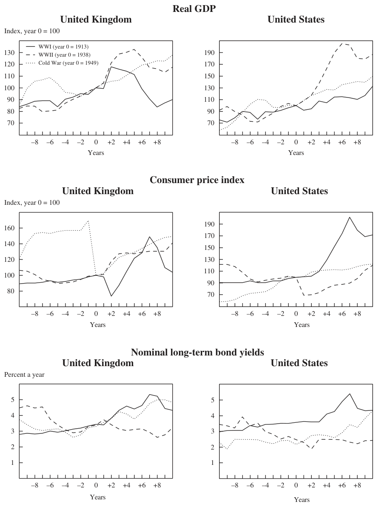
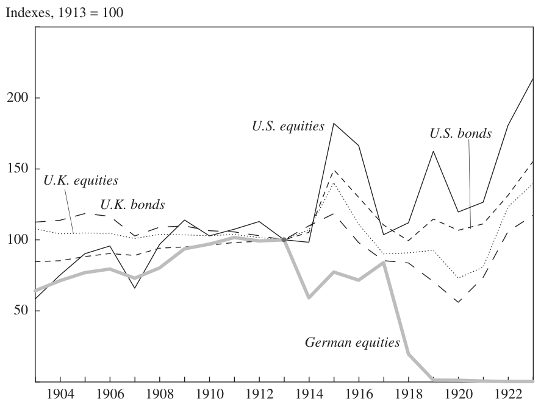
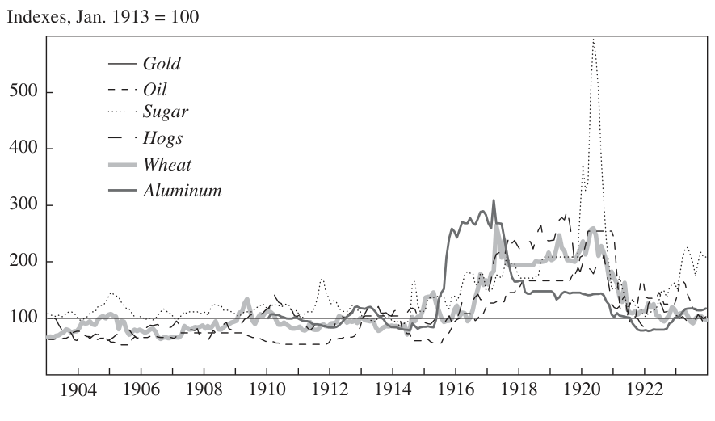
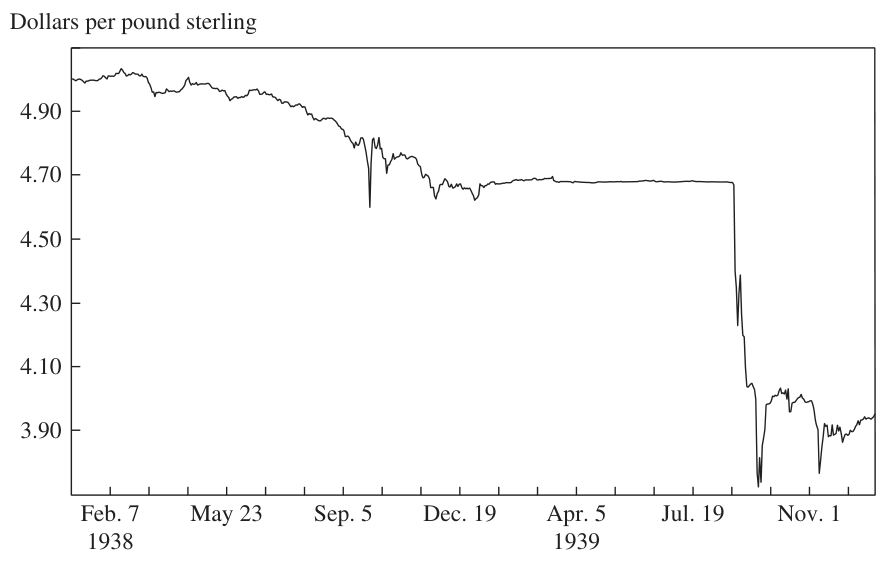
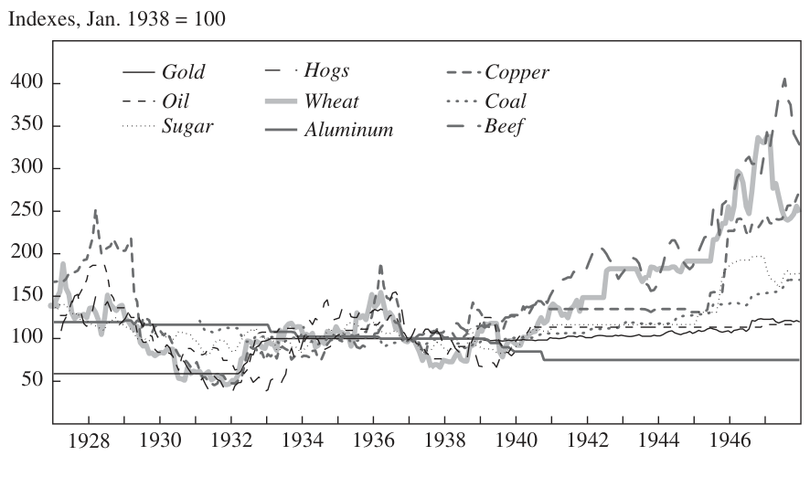
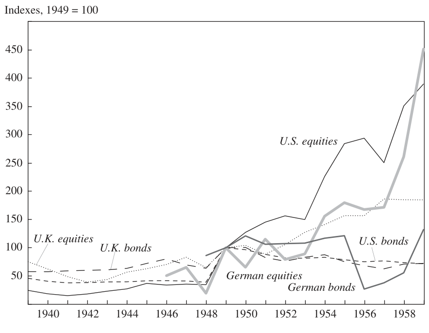

Earning from History? Financial Markets and the Approach of World Wars
NIALL FERGUSON
Harvard University
ABSTRACT Are world financial markets paying due heed to geopolitical risk? Despite unchallenged U.S. military supremacy, the financial consequences of a terrorist nuclear strike, or war in the Middle East or the Taiwan Strait—or some totally unforeseen conflict—could still be enormous. That globalization under a powerful hegemon has strengthened linkages among national economies may not rule out another major war: such linkages were also strong on the eve of World War I, which thus caught investors off guard. Investors try to learn from history, but the very different financial impacts of the two world wars and the Cold War reveal the tendency of military technology and regulatory regimes to shift significantly, reducing the relevance of past experience. Any lessons investors might take from the last war could have limited relevance for the next—or be forgotten after a generation of relative peace has led to complacency.
We have been living through a paradox. Since September 11, 2001, according to a number of neoconservative commentators, America has been fighting World War III (or IV, to those who like to give the Cold War a number). For more than six years these commentators have repeatedly drawn parallels between the “War on Terror” that is said to have begun in September 2001 (or earlier) and World War II. Immediately after 9/11, al Qaeda and other radical Islamist groups were branded “Islamofascists.” Their attack on the World Trade Center and the Pentagon was said to be this generation’s Pearl Harbor. In addition to coveting weapons of mass destruction and covertly sponsoring terrorism, the Iraqi dictator Saddam Hussein was denounced as an Arab Hitler. The fall of Baghdad was supposed to be like the liberation of Paris. Anyone who opposed the policy of preemption was an appeaser. And so on.1
1. See, for example, Podhoretz (2007).
431
432 Brookings Papers on Economic Activity, Spring 2008
Yet throughout this period of heightened terrorist threats and overseas military interventions, financial markets appear to have displayed a remarkable insouciance about political risk. The U.S. stock market was affected only momentarily by the attacks of 9/11. True, between September 10 and September 21, 2001, the Dow Jones Industrial Average declined by as much as 14 percent. Within just over two months, however, the Dow had regained its pre-9/11 level. And although 2002 was a disappointing year for U.S. equity investors, the market surged ahead thereafter, exceeding its previous peak (at the height of the “dot-com” mania) in the fall of 2006. By October 9, 2007, the Dow stood at nearly double the level it had reached in the trough five years before. Nor was the U.S. stock market by any means the outstanding performer in the period after 9/11. In the five years to July 31, 2007, all but two of the world’s equity markets delivered double-digit returns on an annualized basis. Among the ten best performers were Egypt (+69 percent a year), Turkey (+44 percent), and Indonesia (+39 percent), all countries with large, overwhelmingly Muslim populations. The United States, with a 9.9 annualized percentage gain, was in fact among the two worst performers, the other being Israel’s nondomestic market (9 percent).2
If, as readers of Samuel Huntington were led to believe, a “clash of civilizations” between Islam and the West was under way during this period,3
Western investors would have done well to back the other side.
The worldwide boom in asset prices between 2002 and 2007 was not confined to equity markets. Emerging market bonds also rose strongly, driving down spreads over U.S. Treasury bonds to record lows. Real estate markets, especially in the English-speaking world, also saw remarkable capital appreciation. Whether they put their money in commodities, works of art, vintage wine, or exotic asset-backed securities, investors made money. The principal forces at work—above-average global economic growth, a secular redistribution of factor incomes from labor to capital, the liquidity generated by the recycling of Asian savings and petrodollars— effectively swamped political concerns.4 Even the extraordinary quintupling in the price of oil that occurred between September 2001 and the time of this writing (May 2008) can be attributed only partly to geopolitical factors such as instability in Iraq or the risk of war between the United States and Iran. The growth of Asian (and especially Chinese) demand for
2. Data are from MSCI Barra (www.mscibarra.com/products/indices/stdindex/ performance.jsp). The Israeli nondomestic index tracks Israeli stocks listed in the United States.
3. Huntington (1996). 4. On the international recycling of savings, see Ferguson and Schularick (2007). Of course, asset prices might have risen still further in the absence of the war on terror and associated political risks.
NIALL FERGUSON 433 oil has been a significantly more important factor, as has the depreciation of the currency in which oil is priced, to say nothing of the limits on global oil refining capacity.
Readers of the news pages of the New York Times could be forgiven for thinking that the world was descending into an abyss of strife. Yet readers of the business pages had the impression—until August 2007—that they were living, like Voltaire’s Dr. Pangloss, in the best of all possible worlds. While the front section of the paper was a doleful chronicle of death and destruction, the middle section was a euphoric catalogue of CDOs, IPOs, and LBOs. What Charles Dickens said of “the year of Our Lord one thousand seventeen hundred and seventy-five” in A Tale of Two Cities seemed also to apply to the six years after 9/11: “It was the best of times, it was the worst of times.” In a number of lectures, papers, and newspaper articles, the first of which appeared in 2005, I sought to explain what I called “the paradox of diminishing risk (perception) in a dangerous world.”5 I drew a parallel with the period immediately before the First World War, when, I suggested, geopolitical risks had been all too real, but financial markets had been lulled into a false sense of security by bountiful liquidity. A similar point was made in a widely reported speech by Lawrence Summers at the 2007 World Economic Forum in Davos, Switzerland.6
A liquidity crisis did indeed strike financial markets shortly after that. But it was due not to an escalation of violence in the Middle East—that had happened in Iraq and Lebanon in 2006, with negligible financial consequences—but to defaults in the U.S. subprime mortgage market and their aftereffects on the markets for asset-backed securities, commercial paper, and interbank loans. Even before JPMorgan Chase and the Federal Reserve stepped in to bail out Bear Stearns’ creditors (and to a lesser extent its shareholders) in March of this year, some commentators were suggesting that it was 1907, not 1914, all over again.7 Political risk, once again, seemed irrelevant.
The possibility nevertheless remains that investors are continuing to ignore a quite separate threat to financial stability. As the 1930s demonstrated, purely financial crises are not the only events deserving of investors’ attention; geopolitical crises can be equally devastating to financial markets. In fact, the former may make the latter more likely by creating socioeconomic and political pressures that encourage violent behavior by governments.
5. Ferguson (2005a, 2007b). 6. See, for example, John Fraher, “Summers, Trichet Warn Davos Party-Goers They Underestimate Risk,” Bloomberg, January 22, 2007.
7. On the financial panic of 1907, see Bruner and Carr (2007).
434 Brookings Papers on Economic Activity, Spring 2008
One obvious objection to analogies with the world wars is that the geopolitical risks the world currently faces are in fact quite small. Compared with previous world conflicts, “World War IV” has been a fairly trifling affair so far. The radical Islamists have at most thousands rather than the millions of trained warriors that were at the disposal of imperial Germany, the Third Reich, imperial Japan, or the Soviet Union. Their most dangerous weapons are car bombs and rocket-propelled grenade launchers, not tank divisions, aircraft carriers, strategic bombers, or intercontinental ballistic missiles. The total number of American fatalities that can be attributed to the War on Terror is not much more than 7,000 (adding together the 9/11 victims with U.S. passports, the service personnel killed in action to date in Iraq and Afghanistan, and the nonmilitary contractors who have died in Iraq). By contrast, the Axis powers killed around 20,000 Allied soldiers and civilians a day, on average, during World War II. Another way of making essentially the same point is to compare the average contemporary American’s lifetime risk of death from war (1 in 134,631) with his or her risk of death from a road accident (1 in 84) or cancer (1 in 4.5).8 True, terrorism inflicted economic damage as well as loss of life on September 11, 2001, extending far beyond the destruction of two towers, four aircraft, and a part of the Pentagon. Nevertheless, as measured by insurance claims, the total costs to the United States due to terrorism amounted to at least $24 billion between 1984 and 2004; the costs attributable to natural disasters in the same period were $188 billion, nearly eight times as much.9 Really big cross-border terrorist attacks remain very rare. Between 1968 and 2007, 6 percent of recorded incidents accounted for nearly half (46 percent) of fatalities attributable to international terrorism. In only one month since records began to be kept (September 2001) has international terrorism killed more than 3,000 people. The next most dangerous month (October 2002) claimed just over 500.10 What is more, by some measures at least, war itself is in decline. According to the annual audit of global conflict published by the Center for International Development and Conflict Management at the University of Maryland, the number of wars and the casualties caused by them have declined over the past twenty years.11
Nevertheless, it would be a mistake to conclude from all this that the potential for a major geopolitical shock is nonexistent. The same report
8. See the statistics at “The Odds of Dying from . . . ,” www.nsc.org/research/odds.aspx, and at www.cancer.org.
9. “Taking Cover,” The Economist, June 16, 2005. 10. Author’s calculations from data available at www.terrorisminfo.mipt.org/ incidentcalendar.asp.
11. Hewitt, Wilkenfeld, and Gurr (2008).
NIALL FERGUSON 435 goes on to observe that “a larger portion of the global community of states is involved [in war] now than in any other time in the past six decades. And the historic low of 19 ongoing armed conflicts in 2004 was followed by an increase to 25 in 2005. . . . Moreover, an unusually large number of ‘new’ conflicts began in 2005–2006.”12 The most likely theater for a major conflict, the Middle East, is the world’s principal source of oil. An escalation and spread of Iraq’s internecine strife, or an American confrontation with Iran over the latter’s nuclear program, would have a substantial and immediate impact on already stretched energy prices. Likewise, the possibility cannot wholly be ruled out of a military clash between the United States and China over Taiwan, if the People’s Republic were to attempt to use force to snuff out Taipei’s aspirations to formal independence. Given its present military supremacy, the United States plainly could not lose such a war, but the economic consequences would be highly disruptive, in view of the continuing reliance of many Chinese exporters on the American market, and the continuing benefit derived by the United States from China’s accumulation of dollar-denominated bonds and bills in its international reserves. Finally, one unintended geopolitical consequence of globalization has been to enrich a number of states that cannot be regarded as innately friendly to the United States: not only fundamentalist Iran but also Communist China, authoritarian Russia, and populist Venezuela.
In contrast to previous epochs, the United States does not need to confront a military near-equal to suffer serious damage. One nuclear weapon in the hands of a few fanatics could obliterate a city, making the impact of Hurricane Katrina on New Orleans pale into insignificance. The breakdown of the forty-year-old system of nuclear nonproliferation is increasing the risk that terrorists will obtain such a weapon. And given the relatively limited impact of the 2001 attacks, al Qaeda has a strong incentive to attempt a “nuclear 9/11.”13 The organization’s spokesmen do not deny this; on the contrary, they openly boast of their ambition “to kill 4 million Americans—2 million of them children—and to exile twice as many and wound and cripple hundreds of thousands.”14 This cannot be dismissed as mere rhetoric. According to Graham Allison, “if the US and other governments just keep doing what they are doing today, a nuclear terrorist attack in a major city is more likely than not by 2014.”15 In the view of Richard Garwin, one of the designers of
12. Hewitt, Wilkenfeld, and Gurr (2008, p. 1). 13. For a compelling case that the “War on Terror” poses a much greater threat than past experience would lead one to expect, see Bobbitt (2008, especially pp. 98–179).
14. Suleiman abu Gheith, quoted in Bobbitt (2008, p. 119). 15. Allison (2008). See also Allison (2004).
436 Brookings Papers on Economic Activity, Spring 2008 the hydrogen bomb, there is already a 20 percent per year probability of a nuclear explosion in an American or a European city. Another estimate, by Matthew Bunn, puts the odds of a nuclear terrorist attack over a ten-year period at 29 percent.16 Even a small, 12.5-kiloton nuclear device would kill up to 80,000 people if detonated in an average American city; a 1.0-megaton hydrogen bomb could kill as many as 1.9 million; a successful biological attack using anthrax spores could be nearly as lethal.17
There is, in short, little prospect of the world’s achieving Kant’s perpetual peace any time soon. On the contrary, some serious scholars of international security see the United States as more vulnerable to a nuclear attack today than at any time during or since the Cold War, for the simple reason that nongovernmental entities like al Qaeda cannot be deterred in the way that state actors can be. The implication is clear. Easy though it is to ridicule the notion of the “War on Terror” as “World War IV,” the parallel is on closer inspection legitimate. The current war really does have the potential to inflict more harm on American civilians and more destruction to property on the American mainland than any previous conflict. And that, in turn, must have economic as well as security implications. To repeat: simply because financial crises frequently occur for nongeopolitical reasons does not mean that political risk can be ignored. The financial crisis of 1907 was a big one, no doubt; 1914, as we shall see, was much bigger.
Comparing World Wars
This paper asks what history can teach us about the impact of big geopolitical shocks on financial markets. It looks mainly at the London and New York markets for bonds, stocks, currencies, and commodities. It does not concern itself with the many small wars that have happened and continue to happen.18 It instead focuses exclusively on three world wars (or rather, two world wars and one near miss): the First World War, the Second World War, and the early Cold War. The rationale is that the economic consequences of big wars remain relatively understudied by comparison with those of big financial crises. The impacts of both kinds of crisis are not normally distributed but appear to obey something like a power law: a plot of the destructiveness of wars against the frequency of their occurrence would look more like a straight line than a bell curve.19 But whereas
16. Both Garwin’s and Bunn’s estimates are cited in Allison (2008). 17. Intriligator and Toukan (2006, table 4.1A). 18. On the incidence of war, see the review of the literature in Ferguson (2000, ch. 1). 19. See Buchanan (2000).
NIALL FERGUSON 437 there has only been one Great Depression, there has been more than one world war, with comparably devastating losses of output in many of the combatant countries, and comparably large declines in asset prices even in markets far from the fighting.20 The importance of wars, and especially world wars, is highlighted by the contribution of Robert Barro and José Ursúa to this volume: of the roughly seventy consumption and output “disasters” they identify for OECD countries, about one-third were warrelated, of which a clear majority were world war–related. For non-OECD countries the proportion of war-related disasters is smaller but still significant.21 For the sake of convenience, economists tend to treat wars as “exogenous shocks.” From the historian’s standpoint, however, there are important differences between the impact of meteors from outer space or lethal pandemics and the impact of wars.22 War is not exogenous, but the endogenous prime mover of the historical process—“the father of all things,” as the philosopher Heraclitus said.
Each of these conflicts was quite distinctive, of course. The First World War was primarily a European (and Middle Eastern) conflict, although many non-Europeans became involved in it. The Second World War was more global in its extent and was roughly five times more destructive in terms of loss of life, not least because both sides systematically targeted civilians. The “Third World War” did not actually happen (other than as a succession of bloody proxy wars, which might be called the Third World’s War), although there was ample reason to fear another world war when conflict erupted in Korea in 1950 and, most historians argue, when the Soviets sought to turn Cuba into a nuclear missile base in 1962. There was also considerable variation in the direct threats of destruction posed by these wars to the United Kingdom and the United States. The latter was not threatened in either the First or the Second World War, but it became increasingly vulnerable to Soviet intercontinental ballistic missiles as the Cold War went on and the size and sophistication of the Soviet nuclear arsenal grew. London faced a small risk of air attack in the First World War, was heavily bombed by the German Luftwaffe in the Second World War, and would probably have been a target in an all-out hot war with the Soviet Union.
Direct physical destruction is not, however, the sole threat that a world war poses. Because of the mobilization of manpower and resources neces-
20. For example, German occupation reduced GDP in France and the Netherlands to below 60 percent of the 1938 level (Ferguson 2007a). For evidence on the disruption to stock markets due to war, see Jorion and Goetzmann (1999).
21. Barro and Ursúa (this volume, table 9). 22. Posner (2004, especially pp. 73–84).
438 Brookings Papers on Economic Activity, Spring 2008 sary to wage conventional conflicts in the first half of the century, world war had profound implications even for investors who were themselves far from the battlefields, simply because of its impact on the relative prices of labor, capital, commodities, and manufactures. Similarly, the devastation inflicted on much of continental Europe during the First and especially the Second World War—which would have been exceeded in the event of a nuclear Third World War—had financial implications for any investor or institution with assets in the affected countries.
As the summary data in figure 1 show, the economic and financial effects of these three big conflicts also varied considerably. In terms of output, the First World War had the most deleterious effect on the British economy, and the Second World War the most positive effect on the American economy. British consumer prices rose by approximately the same amount in all three wars, although inflation was more volatile in the first; the United States experienced much higher inflation in the aftermath of the First World War, followed (as in Britain) by a sharp deflation. Government controls on the capital market explain the relatively modest rise in British long-term interest rates in the First World War and the decline that occurred in the Second World War. U.S. longterm rates were also artificially depressed, following a course similar to that of British rates in the First World War, but remaining lower in both the Second World War and the Korean War.
Figure 2 summarizes total returns on government bonds and equities for Britain and the United States as well as for Germany over the same three periods. In each case the data are expressed in inflation-adjusted sterling terms, to capture the vantage point of the average London investor who, for most of the past hundred years, has typically been more international in outlook than his or her American counterpart. British government bonds produced disappointing returns in the First World War and the Korean War, but moderately good returns in the Second World War. Holding U.S. government bonds was a progressively worse strategy in each successive war. Holding German government bonds in wartime was disastrous in three cases out of three, although the failure of the Korean War to become a world war (which would have devastated Germany) meant that investors recouped their losses in the last case.23 German equities did more or less as badly in the
23. Losses on German assets after the First World War were not as total as figure 2 suggests. In 1923 Reichsmark-denominated assets were indeed worthless, because hyperinflation had destroyed the German currency, but the currency reform of 1924 and subsequent revaluation legislation partly restored the value of (for example) bonds issued before the war, and most companies that survived the 1923 crisis published “goldmark”-denominated balance sheets that to varying degrees restored the capital of equity- and bondholders.
NIALL FERGUSON 439
Figure 1. U.K. and U.S. GDP, Consumer Prices, and Long-Term Bond Yields in Three World Wars

Sources: Bank of England; Carter and others (2006, table Ca9-19); Federal Reserve Bank of St. Louis; Homer and Sylla (1996).
440 Brookings Papers on Economic Activity, Spring 2008
Figure 2. Real Performance of U.K., U.S., and German Government Bonds and Equities in Three World Warsa

Source: Global Financial Data. a. All indexes reflect total returns in sterling terms, adjusted for consumer price inflation. b. Index is for the German domestic market and reflects the limited choice open to German investors because of capital controls and restrictions on new equity issues.
NIALL FERGUSON 441 world wars, but they outperformed British and American equities in the post–Korean War years. (However, it was next to impossible for a British investor in the 1930s to trade into or out of the German stock market.) British equities performed poorly in the First World War but produced higher real returns in the Second World War and the Korean War. The U.S. market performed better than the British market in the First World War and much better in the Korean War but—surprisingly—worse in the Second World War.
In short, there is no simple recurrent pattern. U.S. stocks and bonds produced the best returns in the First World War relative to British and German assets. U.K. stocks, followed by U.S. stocks, produced the best returns in the Second World War. But German stocks, which had been a disastrous investment in both world wars, ended up outperforming those of the other two countries in the wake of the Korean War.
The core argument of this paper is that, having been taken by surprise in 1914, investors did try to learn from history in the late 1930s, but (to borrow a phrase from the British historian A. J. P. Taylor) they mainly learned how to make new mistakes, since the lessons of the previous war proved to have only limited relevance to the next one. Something similar happened in 1950. A more tentative suggestion is that investors tended to learn only from relatively recent history. After a world war had receded by more than about twenty-five years, it ceased to affect behavior.
The organization of the rest of the paper is chronological. The next section shows how the majority of investors in London, then the world’s biggest capital market, were caught unaware by the escalation of the conflict in the Balkans in July 1914—so much so that a very severe liquidity crisis occurred in most financial centers even before war had broken out. The second section argues that the origins of the First World War have been revealed only with the benefit of hindsight; at the time, they were largely invisible. The same, however, cannot be said of the Second World War, discussed in the third section. Investors had learned from the searing experiences of 1914–23, which had seen a wide range of European currencies and securities drastically reduced in value as a result of inflation and outright default. They therefore sought to adjust their portfolios defensively as soon as they saw a renewed risk of world war. If 1914 was a bolt from the blue, 1939 seemed long overdue. The fourth section asks if any general lesson can be drawn from this history, given the uncertain character of events like major wars, and then goes on to consider the way investors responded to the possibility of a Third World War during and after the crisis in Korea in 1950. The paper concludes with some reflections about the threat of large-scale conflict in our own time.
442 Brookings Papers on Economic Activity, Spring 2008
1914: A Bolt from the Blue
The world of 2008 is not the world of 1914, but in economic terms it may have more in common with that time than with the world in any intervening year. Then, as now, the world economy was highly integrated, with international flows of labor, goods, and capital reaching levels in relation to total world output not subsequently matched until the 1990s. Yet this “globalized” world was, like today’s, afflicted with various forms of political fragmentation. The rise of radical anticapitalist ideologies and terrorist movements (al Qaeda today, Bolsheviks and anarchists then) posed a threat to the established political order in key emerging markets (the Middle East today, Russia then). The existence of rogue regimes willing to sponsor terrorism (Iran today, Serbia then) increased the chances that assassins and bombers would hit their targets. Meanwhile the possibility existed that the great powers or empires might come into conflict over minor states (Taiwan today, Belgium then). And the Anglophone empire that had underwritten the global economic order (the United States today, the United Kingdom then) was finding itself increasingly overstretched.
Of course, there are differences between the two ages of globalization. Today, thanks to technological advances in communications, free trade prevails in many services as well as in commodities and manufactures. Much mass migration today is to Europe, not from it. Capital movements today are not wholly free, so long as China prevents its citizens from investing abroad. The international monetary system today is made up of fiat currencies, with central bankers using as much discretion as rules to determine policy. In marked contrast to the era of the gold standard, some exchange rates float freely, while others are pegged more or less firmly to an anchor that is no longer made of metal. Deflation in recent years has affected the price of manufactures (textiles and electronic goods, for example), whereas from the mid-1870s until the mid-1890s it was agricultural prices that were depressed. Today’s American empire is a colossal debtor, not “the world’s banker” like the British Empire before it. Financial innovations—securitization, derivatives—have allowed much higher levels of leverage, not least for ordinary households, than was thought possible a century ago, when consumer debt was minimal and banks maintained much higher capital ratios. Asia is on the rise today, whereas a hundred years ago only Japan had eluded direct or indirect European domination, and growth in India and China was, respectively, negligible and negative. Democratic institutions are more widely spread in our time: the
NIALL FERGUSON 443 empires of 1914 have nearly all declined and fallen, replaced by a multitude of great and small nation states.
Nevertheless, these differences do not entirely spoil the analogy. In 1914 as today, substantial pools of private capital operated with minimal regulation. In 1899, for example, the banks owned and managed by the Rothschild family had a combined capital of £41 million, which exceeded that of the five biggest German joint-stock banks put together.24 Such firms essentially existed to manage the vast wealth of the partners and their relatives. The three decades before 1914 were golden years for this financial elite. Inflation expectations were securely anchored. Europe’s central banks had nearly all committed themselves to the gold standard by 1908, which meant that nearly all had to target their gold reserves, raising rates (or otherwise intervening) if they experienced a specie outflow.25 Longterm interest rates were low. Although the yield on the benchmark British consol rose by over 100 basis points between 1897 and 1914, that was from an all-time nadir of 2.25 percent. What we would now call “emerging market” spreads narrowed dramatically, despite major episodes of debt default in the 1870s and 1890s. With the exception of those of Greece and Nicaragua, none of the sovereign or colonial bonds trading in London in 1913 yielded more than 200 basis points above consols, and most paid considerably less.26 The yields on the bonds of the other great powers, which accounted for about half the foreign sovereign debt quoted in London, declined steadily after 1880, suggesting that political risk premiums were also falling. Before 1880, Austrian, French, German, and Russian bonds had tended to fluctuate quite violently in response to political news; but the various crises of the decade before 1914—such as those over Morocco and the Balkans—caused scarcely a tremor in the London bond market. Although the major stock markets did not perform spectacularly— Britain’s essentially flat-lined after the 1895–1900 “Kaffir” (gold mine) bubble burst, and the Dow Jones failed to recover its January 1906 high in the aftermath of the 1907 panic—the volatility of returns trended downward. There is at least some evidence to connect these trends with a secular upward shift in liquidity, due partly to increased gold production and, more importantly, to financial innovation, as joint-stock banks expanded
24. See the appendix to Ferguson (1998). 25. Such a targeting regime might have been expected to produce high volatility in short-term interest rates. However, it is clear that not all banks played strictly by the rules of the game. Even the Bank of England made significantly fewer changes to its discount rate with every passing decade from the 1870s, when the Bank rate was altered 113 times, to the 1900s, when it changed just 49 times. 26. Ferguson and Schularick (2006).
444 Brookings Papers on Economic Activity, Spring 2008 their balance sheets relative to their reserves, and savings banks successfully mobilized the assets of middle- and lower-class investors.27
All these benign economic trends encouraged optimism. To many businessmen—from Ivan Bloch in tsarist Russia to Andrew Carnegie in the United States—it was self-evident that a major war would be catastrophic for the capitalist system. In 1898 Bloch published a massive six-volume work titled The Future of War, which argued that because of recent technological advances in the destructiveness of weaponry, war essentially had no future. Any attempt to wage it on a large scale would end in “the bankruptcy of nations.”28 In 1910—the same year that Carnegie established his Endowment for International Peace—the left-leaning British journalist Norman Angell published The Great Illusion, in which he argued that a war between the great powers had become an economic impossibility precisely because of “the delicate interdependence of international finance.”29 In the spring of 1914 an international commission published its report into the “outrages” committed during the Balkan wars of 1912–13. Despite the evidence he and his colleagues confronted of wars waged à l’outrance between entire populations, the commission’s chairman noted in his introduction to the report that the great powers of Europe (unlike the petty Balkan states) had “discovered the obvious truth that the richest country has the most to lose by war, and each country wishes for peace above all things.”30 One of the British members of the commission, Henry Noel Brailsford—a staunch supporter of the Independent Labour Party and author of a fierce critique of the arms industry (The War of Steel and Gold)—declared:
In Europe the epoch of conquest is over and save in the Balkans and perhaps on the fringes of the Austrian and Russian empires, it is as certain as anything in politics that the frontiers of our national states are finally drawn. My own belief is that there will be no more wars among the six great powers.31
Yet within just a few weeks of the assassination of the Austro-Hungarian Archduke Franz Ferdinand by the Bosnian Serb Gavrilo Princip—which happened on June 28, 1914—all this optimism was confounded. The first age of globalization came to an end with a bang,32 closely followed
27. For a full discussion of this point, see Ferguson (2006a). 28. Bloch (1899, p. xvii). 29. Angell (1910, p. 49). 30. Quoted in Sheehan (2008, p. 56). 31. Quoted in Sheehan (2008, p. 56). 32. Ferguson (2005b).
NIALL FERGUSON 445 by the sucking sound of liquidity draining with astounding speed out of the global financial system. On July 22 the Times of London made the first English-language allusion that I have been able to trace to the possibility that the crisis in the Balkans precipitated by the archduke’s assassination might have negative financial consequences. The report appeared on page 19 and read as follows:
STOCK EXCHANGE DEPRESSED BY FOREIGN POLITICAL NEWS
LATE RALLY IN AMERICANS Stock markets at the opening were entirely overshadowed by the news that the relations between Austria-Hungary and Servia [sic] are daily growing more strained. . . . Owing to the increasing gravity of the situation in the Near East the attention of members [of the Stock Exchange] has for the moment appeared to be diverted from the Ulster crisis [caused by Protestant opponents of Irish Home Rule] . . . there being a general disinclination to increase commitments in view of the obscurity of the outlook both at home and abroad.33
Considering the vast body of literature that has been written about the origins of the First World War—tracing these back as far as the 1870s, or at least the 1900s—it is remarkable that from the vantage point of contemporary financial journalism the war had virtually no origins at all. Other evidence strongly supports the proposition that to investors, who were among the best-informed people in the world at that time, the war came as a complete surprise. As late as August 1, the headline on the front page of the New York Times was the wildly optimistic “CZAR, KAISER AND KING MAY YET ARRANGE PEACE.”34 But that same day saw the following stark headline on the lead financial page of the London Times:
STOCK EXCHANGE CLOSED UNTIL FURTHER NOTICE
SETTLEMENTS POSTPONED35
As the Economist observed in its leading article:
On Sunday [July 26] . . . Europe was suddenly confronted with the fear of a great war on a scale of unprecedented magnitude. . . . The world . . . seems to be returning to a basis of cash and barter . . . and unless a proclamation
33. The Times (London), July 22, 1914, p. 19. 34. Austria had declared war on Serbia on July 28. On July 31 Russia had begun general mobilization. Germany declared war on Russia on August 1 and on France on August 3. Britain entered the war on the 4th.
35. The Times (London), August 1, 1914, p. 13.
446 Brookings Papers on Economic Activity, Spring 2008 of neutrality relieves the strain worse may ensue. . . . The City [of London] has seen in a flash the meaning of war.36
Table 1 shows how little the crisis was anticipated. Apart from an upward movement in Austrian bond yields, there were no significant shifts on either the bond market, the money market, or the foreign exchange markets until the final week before war broke out.
The earliest symptom of the crisis was a rise in shipping insurance premiums in the wake of the Austrian ultimatum.37 Bond and stock prices began to slip as prudent investors sought to increase the liquidity of their positions. Exchange rates shifted dramatically as a result of efforts by cross-border creditors to repatriate their money: sterling and the franc surged, while the ruble and the dollar slumped.38 By July 30 panic reigned.39 The first firms to come under liquidity pressure in London were the jobbers on the Stock Exchange, who relied heavily on borrowed money to finance their holdings of equities. As sell orders flooded in, the value of their stocks plunged below the value of their debts, forcing a number into bankruptcy. Also under pressure were the commercial bill brokers in London, many of whom were owed substantial sums by continental counterparties that were now unable or unwilling to remit funds. Their difficulties in turn affected the acceptance houses (the elite merchant banks), who were first in line if the foreigners defaulted, since they had “accepted” the bills. If the acceptance houses went bust, the bill brokers would go down with them, and possibly also the larger joint-stock banks, which lent millions every day on call to the discount market. The joint-stock banks’ decision to call in loans deepened what we would now call the credit crunch.40 As everyone scrambled to sell assets, stock prices fell, compromising brokers and others who had borrowed using shares as collateral. Domestic customers began to fear a banking crisis. Queues formed as people sought to exchange banknotes for gold coins at the Bank of England.41
The effective suspension of London’s role as the hub of international credit helped spread the crisis from Europe to the rest of the world.
Perhaps the most remarkable feature of the crisis of 1914 was the closure of the world’s major stock markets for periods of up to five months. The Vienna market was the first to close, on July 27. By July 30 all the
36. The Economist, August 1, 1914, p. 218. Emphasis added. 37. This part of the discussion draws extensively on Ferguson (2008). 38. Sprague (1915, pp. 505ff). 39. Brown (1988, pp. 1–34). 40. Keynes (1914). 41. Morgan (1952, pp. 3–11).
2.5% 3% 5% of Austria, 3% of St. New
Date consols rentes 1822 4% 1891 Paris Petersburg Vienna Berlin York
Three-month-forward exchange rates (currency units per pound sterling, January 7 = 100)
commercial
Interest on bills, first-
(percent a year)
class
U.K., France, Russia, Germany,
Government bond yields (percent a year)
Table 1. Selected Financial Indicators, June–July 1914
June 5 3.38 3.49 4.13 4.71 3.90 211⁄16 100.01 101.23 100.10 101.21 100.41 June 12 3.39 3.49 4.13 4.82 3.90 21⁄2 100.05 101.23 100.10 101.18 100.49 June 19 3.34 3.55 4.13 4.82 3.90 25⁄16 100.01 101.23 100.10 101.14 100.54 June 26 3.33 3.59 4.13 4.71 3.90 23⁄8 100.03 101.09 100.23 101.09 100.39 July 3 3.31 3.58 4.13 4.65 3.90 17⁄8 99.89 100.90 100.23 101.15 100.72 July 10 3.30 3.62 4.13 4.65 3.92 2 100.03 100.97 100.15 101.21 100.21 July 17 3.29 3.62 4.13 4.94 3.92 21⁄8 99.95 100.40 100.15 101.16 100.21 July 24 3.33 3.69 4.13 5.00 3.95 29⁄16 100.01 101.47 100.42 101.23 100.21 July 31 3.55 3.64 4.24 5.13 4.11 5 98.5 n.a. n.a. n.a. n.a.
Source: The Economist.
448 Brookings Papers on Economic Activity, Spring 2008 continental European exchanges had shut their doors. The next day London and New York felt compelled to do the same. Although a belated settlement day went ahead smoothly on November 18, the London Stock Exchange did not reopen until January 4, 1915. Nothing like this had happened since its founding in 1773.42 The New York market reopened for limited trading (bonds for cash only) on November 28, and something like normal service resumed the following month, but wholly unrestricted trading did not resume until April 1, 1915.43 Nor were stock exchanges the only markets to close in the crisis. Most U.S. commodity markets had to suspend trading, as did most European foreign exchange markets. The London Royal Exchange, for example, remained closed until September 17.44 It seems likely that had the markets not closed, the collapse in prices would have been as extreme as in 1929, if not worse.
To be sure, the existence of the gold standard tended to exacerbate the liquidity crisis in a way very different from what has been seen since August 2007. Some central banks (notably the Bank of England) actually raised their discount rates in the initial phase of the crisis, in a vain attempt to deter foreigners from repatriating their capital and thereby draining gold reserves. The adequacy of gold reserves in the event of an emergency had been hotly debated before the war; indeed, these debates are almost the only evidence that the financial world had given any thought whatever to the trouble that might lie ahead.45 However, the gold standard was no more rigidly binding than today’s informal dollar pegs in Asia, the Middle East, and Latin America; in the emergency of war, a number of countries, beginning with Russia, simply suspended the gold convertibility of their currencies. In both Britain and the United States, formal convertibility was maintained, but it could have been suspended if that had been thought necessary. (The Bank of England requested and was granted suspension of the 1844 Bank Act, which imposed a fixed relationship between the Bank’s reserves and note issue, but this was not equivalent to suspending specie payments.) In each case the crisis prompted the issue of emergency paper money by the national treasury: in Britain, £1 and 10 shilling Treasury notes, and in the United States, the emergency notes that banks were authorized to issue under the Aldrich-Vreeland Act of 1908.46 Then, as now, the authorities reacted to a liquidity crisis by printing money.
42. Morgan (1952, p. 27). See also Seabourne (1986, pp. 78, 88–89). 43. Sprague (1915, p. 532). 44. Morgan (1952, p. 19). 45. Seabourne (1986, pp. 80ff). 46. See, most recently, Silber (2007).
NIALL FERGUSON 449
Nor were these the only measures deemed necessary. In London the bank holiday of Monday, August 3, was extended until Thursday the 6th. Payments due on bills of exchange were postponed for a month by royal proclamation. A month-long moratorium on all other payments due (except wages, taxes, pensions, and the like) was rushed onto the statute books. (These moratoria were later extended until, respectively, October 19 and November 4.) On August 13 the chancellor of the exchequer gave the Bank of England a guarantee that if the Bank discounted all approved bills accepted before August 4 “without recourse against the holders,” then the Treasury would bear the cost of any loss the Bank might incur. This amounted to a government rescue of the discount houses; it opened the door for a massive expansion of the monetary base, as bills poured into the Bank to be discounted. On September 5 assistance was also extended to the acceptance houses.47 Arrangements varied from country to country, but the expedients were broadly similar and quite unprecedented in their scope: temporary closure of markets; moratoria on debts; emergency money issued by governments; bailouts for the most vulnerable institutions. In all these respects the authorities were prepared to go much further than they had previously gone in purely financial crises. As had happened during the previous “world war” (against revolutionary and then Napoleonic France more than a century before), the war of 1914 was understood to be a special kind of emergency, justifying measures that would have been inconceivable in peacetime, including (as one Conservative peer put it) “the release of the bankers . . . from all liability.”48
The closure of the stock market and the intervention of the authorities to supply liquidity almost certainly averted a catastrophic fire sale of assets. The London stock market was already down 7 percent on the year when trading was suspended—and that was before the fighting had even begun. Fragmentary data on bond transactions (conducted literally in the street during the period of stock market closure) give a sense of the losses investors had to contemplate, despite the authorities’ efforts. By the end of 1914, Russian government bonds were down 8.8 percent, British consols 9.3 percent, French rentes 13.2 percent, and Austrian government
47. The Bank agreed to advance funds to the acceptors to allow them to repay premoratorium bills on maturity and to defer repayment of the funds until one year after the end of the war (Morgan 1952, pp. 12–23). For other government measures designed to assist the nonbanking sector and exporters, see Seabourne (1986, p. 108).
48. Kynaston (1999, p. 5).
450 Brookings Papers on Economic Activity, Spring 2008 bonds 23 percent.49 In the words of Patrick Shaw-Stewart of Barings, it was “one of the most terrific things London [had] been up against since finance existed.”50 This, however, was merely the beginning. Contrary to the “short war illusion” (which was more widespread in financial than in military circles), another four years of carnage were still to come, and an even longer period of financial losses. Any investor unwise (or patriotic) enough to hang on to U.K. government bonds (whether consols or the new U.K. War Loans) would have seen the index of real returns decline by 46 percent by 1920. The index of real returns on British equities declined by 27 percent (figure 3). A better strategy in this simple contest would have been to put one’s money in gold, which not only retained its capital value during the war but appreciated significantly in sterling terms afterward: it had risen 37 percent above its 1913 level by 1920, although that was down to 12 percent by 1923.
Gold was thus a good hedge against wartime inflation, but it was not the best asset for a British investor to hold. Since the dollar remained on the gold standard during and after the war, holding dollars would have been equally good. By contrast, exposure to continental currencies would have been either bad or disastrous. Inflation in France and hyperinflation in Germany inflicted severe punishment on anyone rash enough to maintain large franc or Reichsmark balances. Those with substantial holdings of Austrian, Hungarian, Ottoman, or Russian bonds also lost heavily—even when these were gold-denominated—as the Habsburg, Ottoman, and Romanov empires fell apart under the strains and stresses of total war. The losses were especially sudden and severe in the case of Russian bonds, on which the Bolshevik regime defaulted in February 1918. By the time this happened, Russian 5 percent bonds of the 1906 vintage were trading below 45 percent of their face value. Hopes of some kind of settlement with foreign creditors lingered on throughout the 1920s, by which time the bonds were trading at around 20 percent of par. By the 1930s they were all but worthless.51 By contrast, an investor could simultaneously enjoy the benefit of the gold hedge against sterling depreciation and earn additional returns by investing in U.S. stocks. A British investor who had converted his entire portfolio into a selection of blue-chip American stocks on the eve
49. Calculated from isolated prices quoted in the Times (London) between August and December 1914. Note that the decline is not captured in the annual inflation-adjusted figures presented in figure 3.
50. Kynaston (1999, p. 5). 51. See Moore and Kaluzny (2005).
NIALL FERGUSON 451
Figure 3. Inflation-Adjusted Total Returns for U.K., U.S., and German Securities before and after the First World War

Source: Global Financial Data.
of the war would have seen the index of real returns rise by, on average, 47 percent between 1914 and 1923. Yet there is little evidence to suggest that many London-based investors adopted this strategy. Net foreign assets in the United States had declined by $234 million between 1913 and 1914.52 The onset of the diplomatic crisis of July 1914 saw capital flowing in the opposite direction as liquidity-constrained Europeans liquidated their American portfolios and repatriated the funds to London. This can be seen in the sharp depreciation of the dollar that began on July 23 (£1 = $4.88) and reached its peak on August 4 (£1 = $6.25; figure 4).
The First World War not only played havoc with the prices of securities and currencies. It also caused huge volatility in commodity prices. Most food prices had doubled or tripled by 1919–20, and the price of sugar soared to nearly six times its prewar price in 1920, the year after the war ended. The tripling in the price of aluminum, by contrast, happened during
52. Carter and others (2006, table Ee1–21).
452 Brookings Papers on Economic Activity, Spring 2008
Figure 4. U.K.-U.S. Exchange Rate, 1913–14

Source: Global Financial Data.
the war and was reversed before the war’s end as a result of government intervention. Gold, because the United States genuinely maintained convertibility throughout the war, did not vary in price in New York as it did in London. Figure 5 makes clear that, as a hedge against inflation in the United States, gold was not the optimal commodity to buy in 1914. Again, however, there was no detectable prewar move to invest in strategic commodities as a hedge against war risk.
The stakes for investors had thus been very high in the summer of 1914, although few of them seem to have known it before the storm broke. The impact of the war was very far from uniform on the various asset classes open to a typical capitalist of the prewar years. John Maynard Keynes’s archetypal prewar rentier, sipping his tea and playing the global markets from the comfort of his London boudoir, had little suspected what havoc would be wrought by “the projects and politics of militarism and imperialism, of racial and cultural rivalries, of monopolies, restrictions, and exclusion.”53 These forces were indeed the serpent in the paradise of pre-1914 globalization. But the serpent’s bite was more fatal to some portfolios than to others.
53. Keynes (1919, ch. 2).
NIALL FERGUSON 453
Figure 5. Selected Commodity Prices before and after the First World Wara

Source: Global Financial Data. a. Figure uses U.S. data, which are more readily available than U.K. data.
History and Uncertainty
For ninety years, historians have been industrious in devising ex post facto explanations for the First World War. Many have sought to heap blame on Germany, arguing that the leaders of the Kaiserreich embarked on a reckless “bid for world power” that was as much a product of domestic political conflicts within Germany as of any rational grand strategy. Some British historians have identified a failure in London effectively to deter Germany with a credible military commitment to the continent. But for the weariness of the British titan, in this view, the German gamble on war might never have been attempted. In truth the war arose because each of the European empires felt threatened in some way or other. Without the desire of the elites in Vienna and Budapest to reckon with Serbia’s “South Slav” pretensions to Balkan hegemony, the war could not have happened. Without the almost frivolous readiness of the tsar’s ministers to wager his crown on a confrontation with the German powers—less than ten years after Russia’s humiliation at the hands of Japan—the war might have been localized in the Balkans. Imperial insecurities were exacerbated by the tantalizing advantages that seemed within reach—if only one’s army could be enlarged still further, if only one’s ally could be bound still closer. Domestic political factors were important, too. It was the rise of an organized
454 Brookings Papers on Economic Activity, Spring 2008 labor movement in Europe that directly or indirectly imposed restraints on the great powers’ armaments programs, if only because the tax increases necessary to buy new battalions and battleships threw distributional disputes into bold relief. At the same time, it was the rise of a militant Right that lent credence to the notion that war might be the solution to imperial problems, rather than the solvent of the empires themselves that it turned out to be.
The First World War of the historians is thus so overdetermined that it emerges as a crisis that was highly probable. That is why most historical accounts of the war’s origins depict a series of escalating crises, as in these chapter titles from Taylor’s Struggle for Mastery in Europe:
The Last Years of British Isolation, 1902–5 The Formation of the Triple Entente, 1905–9 The Years of Anglo-German Hostility, 1909–12 The Balkan Wars and After, 1912–14 The Outbreak of War in Europe, 1914.54
Yet the reality remains that, ex ante, World War I was not a highprobability event; otherwise more contemporaries would have seen it coming. The investment community of the City of London was made up of sophisticated, well-informed people, as familiar with the corridors of power as with their own counting houses. That the war took them so unaware suggests that most traditional historical explanations of what happened are fatally flawed. Does this mean that the war was a “black swan,” in Nassim Taleb’s sense of an event to which people myopically attached a zero probability?55 Not quite. It would be more correct to say that a big war belonged in the realm of uncertainty.56 People before July 1914 knew that a great war was possible; hack writers made English readers’ flesh creep with imaginary scenarios like a German conquest of England, complete with Berlin-style cafeterias on a renamed “Regentstrasse.”57 But it was impossible to attach a probability to such a scenario. This was a point brilliantly expressed by Keynes in 1937. “By ‘uncertain’ knowledge,” he wrote in a response to critics of his General Theory,
. . . I do not mean merely to distinguish what is known for certain from what is only probable. The game of roulette is not subject, in this sense, to
54. Taylor (1954). 55. Just because all the swans you have ever seen have been white does not mean there is no such thing as a black swan (Taleb 2005, p. 117).
56. On the distinctions between probabilistic risk and uncertainty, see Knight (1921). 57. Saki (1980).
NIALL FERGUSON 455 uncertainty. . . . The expectation of life is only slightly uncertain. Even the weather is only moderately uncertain. The sense in which I am using the term is that in which the prospect of a European war is uncertain, or . . . the rate of interest twenty years hence. . . . About these matters there is no scientific basis on which to form any calculable probability whatever. We simply do not know.58
And he went on to pose and answer a question that is central to the problem of political risk:
How do we manage in such circumstances to behave in a manner which saves our faces as rational, economic men?
(1) We assume that the present is a much more serviceable guide to the future than a candid examination of past experience would show it to have been hitherto. In other words we largely ignore the prospect of future changes about the actual character of which we know nothing.
(2) We assume that the existing state of opinion as expressed in prices and the character of existing output is based on a correct summing up of future prospects. . . .
(3) Knowing that our own individual judgment is worthless, we endeavor to fall back on the judgment of the rest of the world which is perhaps better informed. That is, we endeavor to conform with the behavior of the majority or the average.59
It is surely not without significance that Keynes could consign “the prospect of a European war” to the realm of uncertainty in the year 1937.
Keynes may or may not have intended to construct an empirically testable hypothesis when he wrote those words, but he certainly did so. Was he right to suggest that his fellow investors in the mid-1930s were wholly present-minded, treating the here and now as a “serviceable guide to the future” rather than basing their judgments on “a candid examination of past experience”? Given what some senior personnel in the City had experienced less than twenty-five years before, when a European war had wreaked full-scale financial havoc in London, it would be rather surprising. As the previous section showed, the financial lessons of the ten-year crisis unleashed at the end of July 1914 were relatively straightforward. If a major European war was imminent, investors would do well to take the following positions:
Bearish: U.K. bonds; continental currencies, bonds, and equities Neutral: U.K. equities Bullish: U.S. stocks; gold, aluminum, oil, sugar, wheat, hogs.
58. Keynes (1937, pp. 213–14). 59. Keynes (1937, p. 214).
456 Brookings Papers on Economic Activity, Spring 2008
It should therefore be quite straightforward to see whether or not investors did learn from the past, by looking for movements in the prices of these different asset classes as the political skies darkened over Europe once again after 1933.
The only reason such a test might not work would be if opinion in the City was universally and unflinchingly confident, until the last day of August 1939, in the ability of the British government to avert war by its policy of appeasement. Certainly more than one historian has claimed that bankers as a class were strongly supportive of Prime Minister Neville Chamberlain.60 Among contemporaries, the Soviet ambassador was not alone in thinking that Chamberlain had strong City support. “He is often called here an ‘accountant in politics,’ ” Ivan Maisky confided to his diary on March 8, 1938, “because he views the whole world primarily from the angle of dividends and exchange quotations. It is for this reason that Chamberlain is a darling of the City, which places implicit trust in him.”61
Evidence of pro-appeasement sentiment in the City is indeed abundant. The governor of the Bank of England, Montagu Norman, was strongly Germanophile, believing almost until the outbreak of war that moderate influences on Adolf Hitler, personified by the Reichsbank president Hjalmar Schacht, would prevail.62 A substantial number of merchant banks represented on the powerful Accepting Houses Committee—notably Schröders and Kleinworts—not only had German antecedents but held or had endorsed a substantial number of German commercial bills that were partially in default under the 1931 Standstill Agreement, whereby Berlin agreed to make interest payments on its total debt but was not required to repay any of the capital sum. Conflict with Germany would force these houses to write off these bills, with dire implications for their balance sheets.63 The Financial Times, too, was as staunchly supportive of Chamberlain as the Times, not only in its lead editorials but also in the regular
60. Newton (1996). See also Kirshner (2007). 61. Maisky diary, March 8, 1938. I am grateful to Gabriel Gorodetsky of Tel-Aviv University for allowing me to see the manuscript of his forthcoming edition of this important source.
62. Kynaston (1999, pp. 433, 449ff). Norman’s refusal to believe that war was coming is well documented in his diary and elsewhere. In April 1935 he described war as being “as remote as the Millennium” (p. 436). In January 1939, returning from the christening of Schacht’s grandson (named Norman after his godfather), he declared that he did “not believe in the likelihood of war this year” (p. 451). In February he still insisted that war was “not inevitable at all” (p. 453). However, as early as the autumn of 1936, he secretly instructed George Bolton and other Bank of England officials to prepare a “war book”—albeit as “an entirely normal Bank precaution against an emergency never likely to happen” (p. 441).
63. Kynaston (1999, pp. 432, 434–35, 439, 452–53).
NIALL FERGUSON 457
“Autolycus” and “Diarist” columns.64 Yet these and other expressions of faith in appeasement may not be the most reliable bellwethers of the mood in Britain’s financial markets in the 1930s. Not everyone in the City toed the Chamberlain line: Anthony de Rothschild did not, nor did Sir Charles Lidbury of the Westminster Bank. And, crucially, an examination of the way investors actually behaved, as manifested in the movements of prices in the markets for bonds, currencies, stocks, and commodities, reveals significant and strikingly early pessimism about the likelihood of another world war.
“Interminable Overture”
Even before the fateful year 1939, at least five acts by the German government clearly signaled Hitler’s intention to overthrow, by force or the threat of force, the European order that had been established at Paris in 1919. In March 1935 Hitler announced his intention to restore conscription in Germany, in violation of the Versailles Treaty. One year later he unilaterally reoccupied the demilitarized Rhineland, in violation of the Versailles and Locarno Treaties. Later that same year, he and his Italian counterpart Benito Mussolini intervened in the Spanish civil war, in contravention of the Non-Intervention Agreement of the summer of 1936. Then, in March 1938, Hitler ousted the Austrian chancellor Kurt Schuschnigg and proclaimed the annexation (Anschluss) of Austria by Germany, an act explicitly prohibited by the Versailles Treaty. Finally, in September 1938, Hitler threatened to go to war to separate the Sudetenland region from Czechoslovakia.65 On the other hand, at least four arguments were put forward in the 1930s for avoiding or at least postponing war by appeasing the dictators. The strategic argument was that an overstretched British Empire could not risk simultaneous conflicts with Germany, Italy, and Japan. The diplomatic argument was that Britain could not yet rely for support on a vacillating France, a hostile Soviet Union, and an isolationist United States. The domestic political argument was that the British public, scarred by the memories of 1914–18, was not yet ready to fight another war.
But it was the economic argument that supposedly carried the most weight in the City. Britain could not rearm sufficiently to fight sooner than 1939 because of fiscal and balance of payments constraints; finance was the “fourth arm” of defense and had to be preserved by a policy of
64. Kynaston (1988, pp. 128–29). See also Kynaston (1999, pp. 444–46, 454, 456). 65. For a detailed account, see Ferguson (2006b, chs. 8 and 9).
458 Brookings Papers on Economic Activity, Spring 2008
“cunction” (playing for time). Moreover, shortages of skilled labor meant that accelerated rearmament—especially if it focused on the construction of a strategic air deterrent—might generate inflationary pressures. Finally, as already noted, a number of City firms were still owed substantial sums by German companies. There was thus a measure of self-interest as well as macroeconomic pragmatism in the City’s support for appeasement. This explains the Financial Times’s doleful comment on the September 1938 Munich agreement among Britain, France, Germany, and Italy, whereby the Sudetenland was summarily handed over to Germany: “Dismemberment is a painful thing for a proud country to contemplate [but] it possesses the one virtue, that it will have spared countless millions the horrors of a war more intense and destructive even than that of 1914–18.”66
Not every financial organ took this line, however. Paul Einzig’s “Lombard Street” column in the Financial News was relentlessly critical of appeasement. The editorials of the Economist consistently criticized the government’s policy on the grounds that concessions to Hitler did more (or perhaps less) than just postpone the evil hour; they actually strengthened the German position.67 As the paper’s lead editorial put it in the immediate aftermath of Chamberlain’s triumphant return from Munich:
To-day’s rejoicings will sound a little flat if it is soon discovered that the great crisis of our civilisation is merely postponed, soon to fall on us again. And they will appear downright foolish if it eventually transpires that this week’s work has lessened our powers of resistance to aggression when we come to meet it again.68
For purposes of this discussion, the striking point about the Economist’s commentary on the Munich crisis is the clarity of the contrast it drew between the crisis of 1914 and the crisis of 1938:
In August 1914, the City was caught utterly unprepared. The war and the financial crisis that accompanied it came entirely as a bolt from the blue. At the end of July, 1914, everybody took it for granted that the methods that had created prosperity and stability for nearly 100 years would continue for ever. It was no wonder that the City was stunned by the shock when . . . it stepped into chaos overnight. . . . At present, however, the state of affairs is totally different. For one thing, even before the development of acute political tension, conditions had been distinctly depressed for many months past. . . . In the last few weeks there can have been few people in the City
66. Quoted in Kynaston (1988, p. 134). 67. See, for example, “The Shadow of the Sword,” Economist, March 19, 1938, p. 609; “Hope from Despair,” September 17, 1938, p. 529; and “Vain Sacrifice,” September 24, 1938, p. 577. For background see Edwards (1995). 68. “Eleventh-hour Reprieve,” Economist, October 1, 1938, p. 3.
NIALL FERGUSON 459
Figure 6. Prices in London of Selected Government Bonds, 1933–38

Source: The Economist, various issues. Figures for returns are not available.
who did not envisage the strong possibility of an armed conflict in which Great Britain would be heavily involved.69
By 1938, in other words, a majority of investors—at least in the eyes of the Economist—saw war as a “strong possibility.” This was far removed from the unfathomable uncertainty Keynes had described a year before.
Financial market data support the proposition that, pace Keynes, investors had learned their history lesson. They understood, for example, that anything that raised the probability of another war was a signal to reduce their exposure to continental securities and currencies. As figure 6 shows, German bonds had sold off in London almost from the moment of Hitler’s appointment as chancellor of the Reich on January 30, 1933.70 French bonds began to slide downward in 1935, even before the remilitarization of the Rhineland. There was also a significant increase in the volatility of Polish bonds from the spring of 1936 and Czech bonds from the spring of 1938. Needless to say, many factors were at work in the bond market of the 1930s. The world was emerging from a deep depression that had profoundly disrupted the flow of international capital, as numerous states either defaulted
69. “The City—Then and Now,” Economist, October 1, 1938, p. 23. Emphasis added. 70. Brown and Burdekin (2002).
460 Brookings Papers on Economic Activity, Spring 2008
Figure 7. U.K.-U.S. Exchange Rate, 1938–39

Source: Global Financial Data.
on their debts or imposed restrictions on capital export, or both. At root, the pricing of a foreign sovereign bond reflects a variety of considerations: the perceived likelihood of default, which can happen for reasons other than war; of depreciation, if the bond is denominated in a foreign currency; or of outright expropriation. It nevertheless seems reasonable to infer from these data that investors were seeking to limit their exposure to continental bonds, mindful of what had happened to those assets after 1914.
A somewhat similar picture emerges from the foreign currency market, although here the effects of government intervention now played a much bigger role, most obviously in the increasingly regulated market for German marks, but also more generally as the monetary authorities learned to manage floating exchange rates following the breakup of the gold standard.71 As figure 7 shows, from February 1938 until March 1939, sterling slipped steadily downward against the dollar, suggesting a drain of capital from London to New York from the time of the Anschluss. The London price of gold also rose by 8 percent between February and December 1938. True, between 1936 and 1938 net foreign assets in the United States actually declined by just over $600 million, jumping upward above the $1 billion mark only in 1939 and 1940. But the Economist’s weekly statements
71. For details see Eichengreen (1992).
NIALL FERGUSON 461
Figure 8. Bank of England Reserves, 1938–39

Source: The Economist, various issues.
on the Bank of England’s international (gold and dollar) reserves tell an unambiguous story (figure 8).72 In marked contrast to 1914, money was leaving London more than a year and a half before the outbreak of war in 1939; the respite provided by the Munich agreement was short-lived. Nor are these the only indicators of early pessimism among investors. Shares in Britain’s biggest arms manufacturer, Vickers, had surged fivefold between 1933 and 1936 in what was little short of a defense stock bubble. Among the strongest performers on the London equity market in 1938 and 1939 were Anglo-Iranian (the oil company) and U.S. Steel. Of the five companies tracked in figure 9, the transatlantic passenger shipping line Cunard fared worst, as might be expected in an atmosphere of mounting Anglo-German tension, given memories of unrestricted submarine warfare.73 None of the above trends was more than temporarily halted by the Munich agreement. Indeed, in most cases the famed Munich “bounce”
72. All data from successive issues of the Economist. For annual data on the Bank of England, see Peden (2000, appendix IV, table D).
73. An indicator that I have not consulted is shipping insurance premiums. It would be very surprising to find no increase in these during the 1930s. On the impact of the First World War, see Lay (1925, pp. 55–56).
462 Brookings Papers on Economic Activity, Spring 2008
Figure 9. Share Prices in London of Selected Large Companies, January–December 1938

Source: The Economist.
turns out to have been little more than a reversion to the longer-term downward slide after a severe selloff in the preceding week, when the probability of war had sharply risen.74
All this would seem to support the hypothesis that, like the Economist and unlike the Financial Times, investors realized that war had merely been postponed and Germany strengthened by the policy of appeasement. This increased the pressure on the Bank of England as individuals and institutions began to seek refuge in gold, dollars, and U.S. stocks, rendering null and void the argument that playing for time would help to preserve the financial fourth arm of British defense. This, in short, was the very opposite of the situation in 1914, when war had been a bolt from the blue. The Second World War was a long-anticipated event, with the Czech crisis merely part of a seemingly “interminable overture,” as depicted in a contemporary cartoon (figure 10). Indeed, it might even be suggested that investors “priced war in” at least a year, and perhaps as much as three years, ahead of time. Something similar also happened in the Scandinavian financial markets.75
74. A more detailed paper on Munich and the City is currently in preparation. 75. See Frey and Kucher (2000, 2001); Waldenström and Frey (2002, 2007).
NIALL FERGUSON 463
Figure 10. “Interminable Overture”

Source: Illustration by David Low in the Evening Standard, October 31, 1939.
There was a reason for this. From a financial standpoint, as the Economist astutely observed, the difference between a period of accelerating rearmament and a period of outright war was (unlike in 1914) in some respects merely one of degree:
The main distinction between the two situations [of a rearming peace or eventual war] is one of economic control. In both, the problem of Budget deficits and high taxation must be faced. In both, the authorities would keep a close watch on the profits of the armaments industry. In both, fears of inflationary developments . . . would be tempered, for a time at least, by the existence of considerable unabsorbed supplies. . . . All these factors tend to limit the advantages of equity shares generally, as a war risk hedge. They might leave some scope for industries serving the armament trades and for suppliers of essential war materials. But they might not provide the same advantages as carefully chosen gold-mining shares or American industrial securities, under wartime conditions.76
This commentary makes it very clear that already, eleven months before the outbreak of war, at least some investors were seeking to apply the
76. “Stock Exchange Policy,” Economist, October 1, 1938, p. 25. Emphasis in original.
464 Brookings Papers on Economic Activity, Spring 2008 lessons of 1914 by hedging against war risk. Home bias might have led the unwary to favor U.K. equities. But one important lesson of the First World War was that government controls over British industry would be increased substantially, at least for the duration of a major conflict. The smart money was therefore on gold and U.S. stocks.
Third Time Lucky
What were the lessons of the Second World War? Perhaps the most obvious lesson was that no two world wars are alike—financially or in any other respect. Contrary to the Economist’s expectations and the experience of the First World War, U.K. equities outperformed gold in the five years after 1939, as well as over the ten-year period from 1939 to 1948. Even more surprisingly, as shown in the preceding section, U.K. equities did better than U.S. equities over the same time frames, and U.K. government bonds offered higher returns than U.S. Treasuries. In real terms, with dividends reinvested, the total return index for British equities was 50 percent above the 1938 level, on average, between 1939 and 1948, compared with a figure of 25 percent for American equities. The equivalent figures from the bond market were 11 percent and 6 percent (figure 11). Between September 1939 and May 1945, to express the difference more simply, the British Actuaries General Index rose by 63 percent. In sterling terms, by contrast, the Dow Jones index went up by just 6 percent. President Franklin Roosevelt once declared that he did not lead the United States into World War II in order to preserve the British Empire. Nor, evidently, did he make war to enrich investors in U.S. equities.
In sum, Keynes’s advice to British investors back in 1937—to base their decisions on “a candid examination of past experience”—turned out to be rather unsatisfactory. Past experience would have led any reasonable asset allocator to be overweight U.S. stocks in 1939. Present knowledge that London was within reach of German bombers, whereas New York was not, merely reinforced the lesson of history. Yet despite the Blitz, London beat New York for equity investors and bondholders alike. Commodity prices, too, behaved in ways that could not easily have been predicted on the basis of past experience, reflecting variations in government regulation as well as the changing nature of military technology. The Second World War broke out after two episodes of commodity price deflation, in 1929–33 and 1937–38. Wartime inflation was manifested most severely in a 116 percent increase in the price of beef. Other raw materials were much more tightly controlled, subject to a ceiling of less
NIALL FERGUSON 465
Figure 11. Inflation-Adjusted Total Returns for U.K., U.S., and German Securities before and after the Second World War

Source: Global Financial Data.
than 50 percent above the prewar price; aluminum actually declined in price during the war (figure 12). After the war, however, inflation surged as price controls were relaxed. By 1948 food prices were as inflated as they had been after the First World War, although no commodity matched sugar’s 1920 peak. Unlike in 1920–21, there was no deflation after 1945.
By themselves, these marked contrasts between the two world wars might have made investors cautious about expecting any third world war to resemble its immediate predecessor. It was in any case perfectly clear after 1945 that any future world war would be profoundly different. With the dropping of the atomic bombs on Hiroshima and Nagasaki—and, more important, with the news that the Soviet Union had successfully tested a replica of the American bomb in August 1949—the very nature of great power conflict was irrevocably altered. “The human animal . . . must change now,” President Harry Truman wrote as early as 1946, “or he faces absolute and complete destruction and maybe the insect age or an atmosphere less
466 Brookings Papers on Economic Activity, Spring 2008
Figure 12. Selected Commodity Prices before and after the Second World War

Source: Global Financial Data.
planet will succeed him.”77 On this point he and Stalin were at one. “Atomic weapons,” the latter remarked in 1949, “can hardly be used without spelling the end of the world.”78 Yet, strictly speaking, that was not yet true when the Korean War broke out in June 1950, at a time when the Soviets had no more than 5 operational bombs to the Americans’ 369. Despite the fears expressed in the Bulletin of the Atomic Scientists, it was very much earlier than “three minutes to midnight,” as the “Doomsday Clock” measured the imminence of all-out nuclear war.79 It was therefore still possible for investors in 1950 to contemplate a third world war fought primarily with conventional weapons.
For slightly more than a year, the conflict in Korea teetered on the brink of global escalation. On June 27, 1950, in the absence of the Soviet representative, the United Nations Security Council authorized foreign assistance to South Korea to repulse the North Korean invaders. This rapidly manifested itself as an American-led and largely Americanmanned expeditionary force, which, after some initial reverses, triumphantly rolled back the invaders to the 38th parallel—and beyond. On October 19, however, with Pyongyang in American and South Korean hands, China entered the war and crossed the Yalu River, inflicting a heavy
77. Gaddis (2005, p. 53). 78. Gaddis (2005, p. 57). 79. See www.thebulletin.org/minutes-to-midnight/timeline.html.
NIALL FERGUSON 467 defeat on the U.S. Eighth Army and forcing the evacuation of American forces from Hungnam harbor. The North Koreans recaptured Seoul on January 4, 1951, and continued to push south. But the tide soon turned again, and by March 14 the Eighth Army was back in control of the South Korean capital. It was during this period that General Douglas MacArthur pressed Truman to allow the use of atomic weapons against enemy targets. Although Truman sacked MacArthur on April 11, the option to use the atomic bomb was never wholly closed off and indeed was frequently contemplated by Truman’s successor, Dwight Eisenhower.80 Nor could it be taken for granted that Stalin would remain on the sidelines. A plausible scenario was that the United States would use an atomic bomb on Chinese troop concentrations, precipitating Soviet reprisals against Berlin and the devastation, once again, of Mitteleuropa. Only in retrospect was the stalemate roughly along the present demilitarized zone inevitable. Only in retrospect were the peace negotiations initiated in July 1951 bound, after two long years, to produce a lasting armistice.
What were the financial implications of a possible escalation of the Korean War? For many investors the answer had to do with the likely impact of American rearmament on inflation. The First World War had caused an upward jump in inflation in all combatant countries, but from late 1920 the trend had been painfully reversed in the English-speaking world. The Second World War had, in this respect, too, been different. Fiscal and monetary policy had been better managed, consumer demand more tightly reined in, and price controls more effectively administered, so that wartime and immediate postwar inflation was lower in both the United Kingdom and the United States than in the earlier conflict. On the other hand, there was no attempt after 1945 to turn the clock back by deflating prices back to their prewar level. The lesson many investors therefore learned from World War II was that another major war would cause a one-time rise in prices that was unlikely to be reversed.
This helps to explain the way financial markets reacted to the outbreak of the Korean War. The U.S. stock and bond markets responded negatively, but by the standards of 1914 or 1939 the effect was modest and short-lived. Subsequent crises—the Chinese crossing of the Yalu, the dismissal of MacArthur—had a negligible impact. The Economist noted a significant impact on securities “nearest to the storm centre,” notably Japanese bonds. But the “violent overnight slump in Wall Street,” which had seen the Dow Jones index fall from 224 to 214, had been followed
80. See Gaddis (2005, pp. 52–53).
468 Brookings Papers on Economic Activity, Spring 2008 by a “slight rally” after Truman’s pledge of “strong and immediate” measures, while London had seen no more than a “precautionary marking down of prices.” The really significant market moves were upward, as investors bought up commodity-related shares such as those of Rhodesian copper mines, acting on “the general assumption that the week’s developments must impart new impetus to the forces of inflation.”81
There was also an upward move in the world’s remaining free markets for gold—a reminder that under the Bretton Woods system gold was no longer freely traded in most financial centers.
Here was the new lesson of history: that a major war would have “inflationary implications” and that these would initially manifest themselves in higher commodity prices. “The western world,” noted the Economist on July 15, 1950, “has been treated in the space of three weeks to a boom in commodity prices of so far-reaching an order as to suggest that the tepid war had been heated up to boiling point.”82 First in line, besides copper, were rubber, tin, lead, and cotton, the prices of which were expected to be driven up as the United States rearmed, particularly at a time when the demand of consumer industries for the same articles was already riding high. A related expectation—once again based on the experience of World War II—was that the U.S. government would move swiftly to restrict the consumer sector’s appetite for commodities, which spelled difficult times for “nonessential” sectors such as automobiles and televisions. It also seemed reasonable to anticipate renewed demand-side restrictions on consumer credit and loans for housing, as well as increased taxation.83
By November 1952 it had become clear that the extent of the warinduced inflation would vary from country to country according to the stringency of the national fiscal and monetary authorities.84 Looking back after two years of stalemate and relatively low-intensity conflict, investors were bound to conclude that these, rather than the appetite of the military for commodities, posed the principal challenge to the preservation of wealth in times of geopolitical crisis. The Korean experience also reestablished the attractiveness to investors of the U.S. stock market, which in sterling terms easily outperformed the other assets tracked in figure 13. German stocks did not catch up until long after the threat of an escalation
81. All the quotations in this paragraph are from “The City and Korea,” Economist, July 1, 1950, p. 32. 82. “Prices and Korea,” Economist, July 15, 1950, p. 136. 83. “Strains on the Economy,” Economist, July 22, 1950, p. 172. See also “Policy for Commodities,” Economist, November 11, 1950, p. 759.
84. “Monetary Orthodoxy in Europe,” Economist, November 15, 1952, pp. 497–99.
NIALL FERGUSON 469
Figure 13. Inflation-Adjusted Total Returns for U.K., U.S., and German Securities before and after the Korean War

Source: Global Financial Data.
of the war had receded. Finally, the stabilization of the Korean conflict also meant that commodities behaved differently than they had in the Second World War. As the Economist had foreseen, most commodities did experience price rises, ranging from 14 percent at peak for wheat to 79 percent for sugar (figure 14). Gold, however, declined in price, and the price of oil (as in the Second World War) was controlled. The biggest rises in aluminum and copper prices came after the war, not during it, as civilian demand for these materials surged, liberated from the constraints of the war economy.
In the decade between the Korean War and the Cuban missile crisis— the latter widely regarded by historians as the moment when the Cold War came closest to a nuclear hot war—the nature of the superpower rivalry changed again, and the effect was once more to erode the value of the lessons of history. The financial impacts of both the harbinger of the crisis (the abortive U.S.-sponsored invasion of Cuba in April 1961) and the crisis itself (which became known to the public on the evening
470 Brookings Papers on Economic Activity, Spring 2008
Figure 14. Selected Commodity Prices before and after the Korean War

Source: Global Financial Data.
of October 22, 1962, and appeared to be receding as of October 28) were minimal.85 This was partly because the investing public knew much less about the crisis than is known today.86 They had no idea that on October 25, for the only time in the entire Cold War, the Joint Chiefs of Staff had placed the U.S. Strategic Air Command on DEFCON (defense readiness condition) 2, the highest level of alert preceding general war.87 They had no idea that, at this juncture, Kennedy himself was increasingly inclined to launch an invasion of the island (OPLAN 316 envisaged an amphibious landing by up to 90,000 U.S. troops).88 They had no idea (any more than did Kennedy) that the Soviet forces on Cuba possessed tactical nuclear weapons that could have been used against incoming U.S. forces.
Nevertheless, the minimal market movements occasioned by the crisis are remarkable and require a better explanation than public ignorance. Well-informed Americans can scarcely have been unaware of the massive increase in the destructive capability of the superpowers’ nuclear arsenals
85. President John Kennedy announced the discovery of the Soviet missiles on Cuba, as well as his decision to impose a naval “quarantine” around the island to prevent further military shipments, in a television broadcast at 7 p.m. Eastern time on October 22. The Soviet leader Nikita Khrushchev announced the withdrawal of the Soviet missiles in a broadcast on Radio Moscow at 9 a.m. Eastern time on October 28.
86. For an illuminating modern account, see Fursenko and Naftali (1997). 87. Leffler (2007, p. 151). 88. Fursenko and Naftali (1997, p. 244).
NIALL FERGUSON 471 since the first successful test of a hydrogen bomb in 1954. Fear of “missile gaps” on both sides had spurred an unrestrained arms race. During the crisis, Kennedy spoke of 200 million dead, Khrushchev of 500 million. “If the United States insists on war,” the latter told an American businessman who happened to be visiting Moscow, “we’ll all meet in hell.”89
Yet the movements in the stock market, currency markets, and commodities markets were, even by the standards of the Korean crisis, “well short of panic.”90
Why were financial markets not set ablaze by a crisis that threatened to incinerate the entire world? To some extent the markets’ seeming insouciance reflected the increased regulation of capital markets that was to be a distinguishing feature of the 1960s. In London the Cuban crisis had indeed occasioned a “large switching out of paper money and paper securities into gold,”91 suggesting that memories of 1914 (and 1938) still lingered in some minds. But these moves had minimal effects on prices because the gold market was now under even stricter government control, following the creation of a gold pooling arrangement between the Bank of England and other central banks. There was some selling pressure on the dollar, too, but neither American nor foreign investors could easily switch into other currencies, since the Eurodollar market was still in its infancy and capital controls were in place in nearly all European countries. A better explanation for the lack of financial fear may be that the likely consequences of World War III were now so horrendous as to be beyond the scope of traditional business calculation. “Business reactions to the Cuban crisis have been bewildered rather than considered,” observed the Economist in its edition of October 27 (written before the crisis was over), “for the good reason that no considered view is possible”:
The ultimate uncertainty of the nuclear age, paradoxically, itself removes the rationale of panic of the kind which accompanied the threat of less cataclysmic war. Some investors still respond instinctively to the standard maxim at such times of “Go liquid, go home”; but far more have simply sat tight and sensibly refused to embark on fanciful hypothetical prognostications which would have little relevance even if they turned out right.92
This, surely, goes to the heart of the matter. A world war waged with conventional weapons had roughly calculable financial implications. Even
89. Fursenko and Naftali (1997, p. 256). 90. “Well Short of Panic,” Economist, October 27, 1962, p. 386. 91. “Twenty Billion Dollar Question,” Economist, October 27, 1962, p. 379. 92. “Twenty Billion Dollar Question,” Economist, October 27, 1962, p. 379.
472 Brookings Papers on Economic Activity, Spring 2008 if no two such wars were identical, there was enough evidence after 1914 to allow historically minded investors to take defensive measures if they felt another such war was likely. By contrast, a world war involving multiple H-bombs was beyond the realm of probabilistic thinking. It was not merely incalculable; it was well-nigh unimaginable. For this reason investors were probably best advised to continue business as usual. If it had come to a Third World War in 1962, the performance of their portfolios would have been the last thing on their minds. As the Cold War continued, with a trend in the direction of arms limitation and superpower détente interrupted only occasionally by superpower interventions in faraway places, it made sense to continue with this strategy. With every passing year, investors paid more attention to domestic fiscal and monetary policy and less attention to the alarums and excursions of international relations. Vietnam never threatened to become a world war; its primary economic significance was in loosening American fiscal and monetary policy and sowing the seeds of higher inflation. Likewise the Middle Eastern conflicts of the 1970s were interpreted by investors primarily in terms of their inflationary impact, rather than their potential to escalate to Armageddon. By 1979, that annus horribilis for U.S. foreign policy, which culminated in the Soviet invasion of Afghanistan on Christmas Day, the actions of Federal Reserve chairman Paul Volcker were being scrutinized a great deal more closely on Wall Street than the actions of the Politburo.93
Conclusion
The financial history of twentieth-century world wars seems to suggest that it is as unwise for investors as for generals to try to fight the last war rather than the next one. Investors failed to anticipate the huge liquidity crisis unleashed by the First World War. They largely failed to protect themselves against the longer-term effects of a big war on continental securities and currencies. Yet knowing in the 1930s what had happened to various asset classes after 1914 did not provide a ready-made strategy for weathering the next world war. Changes in military technology and government regulation ensured that one could never be certain that the next war would have the same financial impact as the previous war. The
93. See my discussion in Ferguson (2000, p. 181). The recollection of Henry Kaufman, then chief bond market analyst at Salomon Brothers, is that Federal Reserve tightening was much more important than the Afghan crisis in moving U.S. bond yields higher (personal communication with the author).
NIALL FERGUSON 473 same problems arose again for investors after 1945. And simply because the Cold War never became truly “hot” does not mean that the ex ante probability of a nuclear war between the superpowers was always zero. Investors once again tried to learn from history when the Korean War broke out, acting on the assumption that it might have effects similar to those of the Second World War. Twelve years later, by contrast, at the time of the Cuban missile crisis, financial markets evinced only short-lived and mild anxiety, reflecting a realization on the part of investors that a world war in the age of the hydrogen bomb would have incalculable consequences, against which it would be futile to hedge. In the remaining three decades of the Cold War, the superpowers’ consistent success in settling their disputes by diplomatic means (or pursuing them through proxy conventional wars) made a hot war seem ever less likely. As a result, financial markets became progressively less sensitive to international political crises. This was very similar to what had happened in the decades between 1880 and 1914, when successive diplomatic crises and small wars had failed to precipitate a general European war.
If financial market data and commentary are reliable guides, then, Keynes was wrong. After 1914, investors were not excessively presentminded; they did try to form their expectations of war retrospectively. The difficulty was, and remains, the small size of the sample of big wars and the tendency for military paradigms to shift quite dramatically between wars. In the later 1930s and the early 1950s, investors tried to earn from history—or at least to minimize their losses in the event of another world war. But the past was seldom a reliable guide to the present. By the early 1960s, and for the next four decades, geopolitical risk waned as a concern in the minds of investors, even though the potential destructiveness of a Third World War continued to grow and was not significantly reduced by strategic arms limitation agreements.
A period such as the present, of sporadic terrorism and small conventional wars—a period of immense asymmetry in the global military balance, to the advantage of the Western powers—might therefore be expected to foster the belief in financial circles that future wars will also be small, with inconsequential financial effects. The seeming indifference of today’s financial markets to geopolitical risk should therefore be regarded not as evidence that the world will likely avoid a major conflict in the foreseeable future, but merely as evidence that the world has avoided a major conflict in the recent past. Given the relative youth of most employees in the financial sector, and the relative shortness of most senior executives’ careers, “recent” may be taken to mean at most
474 Brookings Papers on Economic Activity, Spring 2008 the past twenty-five years.94 A major conflict would strike this generation of bankers and fund managers much as the war of 1914 struck their predecessors: like a bolt from the blue.
So is the lesson of history simply that there are no lessons from history? Not quite. No two prewar situations are identical, but some have closer resemblances than others. Today there is, to repeat, a danger of a nuclear attack on the cities of the developed world. It may actually be greater than in 1950 or 1962, because of the difficulty of deterring terrorist aggressors. There is also a danger of some kind of interstate conflict centered on the Middle East. A deterioration of Sino-American relations is also a possibility. Most informed commentators today would see these as relatively low-probability scenarios, and most investors appear to regard them as close to zero-probability events. Yet it is easy to imagine future historians retrospectively constructing plausible chains of causation to explain how a concatenation of these threats produced another world war. The advocates of “war guilt” would blame an aggressive Iran or China, leaving others to lament the sins of omission of a weary American titan. Scholars of international relations would no doubt identify the systemic origins of the war in the breakdown of nuclear nonproliferation, the scramble for natural resources, the crisis of the Atlantic alliance, the rise of religious fundamentalism, the weakening of the United Nations, and so on. Couched in the language of historical explanation, a major conflagration can start to seem unnervingly probable in our time, just as it turned out to be in 1914. Some may even be tempted to say that the surge of commodity prices in the period since 2003 reflects some unconscious anticipation of the coming conflict.
One important lesson of history is that major wars can arise even when economic globalization is very far advanced and the hegemonic position of an English-speaking empire seems fairly secure. The second important lesson is that the longer the world goes without a major war, the harder one becomes to imagine (and, perhaps, the easier one becomes to start). The third and final lesson is that when a crisis strikes complacent investors, it causes much more disruption than when it strikes battle-scarred ones. Interminable overtures may be dispiriting. For financial markets, however, bolts from the blue are worse.
94. The average length of the financial careers of the current chief executive officers of Citigroup, Goldman Sachs, Merrill Lynch, Morgan Stanley, and JPMorgan Chase is, by my calculation, just under twenty-five and a half years.
NIALL FERGUSON 475
References
Allison, Graham. 2004. Nuclear Terrorism: The Ultimate Preventable Catastrophe. Times Books/Henry Holt. ———. 2008. “Time to Bury a Dangerous Legacy, Part 1.” Yale Global
(March 14). Angell, Norman. 1910. The Great Illusion: A Study of the Relation of Military
Power in Nations to Their Economic and Social Advantage. London: G. P. Putnam’s Sons. Bloch, Ivan Stanislavovich. 1899. Is War Now Impossible? transl. R. C. Long.
London: Richards. Bobbitt, Philip. 2008. Terror and Consent: The Wars for the Twenty-first Century.
Knopf. Brown, Brendan. 1988. Monetary Chaos in Europe: The End of an Era. London/
New York: Croom Helm. Brown, William O., Jr., and Richard C. K. Burdekin. 2002. “German Debt Traded in London during the Second World War: A British Perspective on Hitler.” Economica 69, no. 276: 655–69. Bruner, Robert F., and Sean D. Carr. 2007. The Panic of 1907: Lessons Learned from the Market’s Perfect Storm. Hoboken, N.J.: John Wiley & Sons. Buchanan, Mark. 2000. Ubiquity: The Science of History . . . Or Why the World Is
Simpler Than We Think. London: Weidenfeld & Nicolson. Carter, Susan B., and others, eds. 2006. Historical Statistics of the United States:
Earliest Times to the Present: Millennial Edition. Cambridge University Press. Edwards, Ruth Dudley. 1995. The Pursuit of Reason: The Economist, 1843–1993.
Harvard Business School Press. Eichengreen, Barry. 1992. Golden Fetters: The Gold Standard and the Great
Depression, 1919–1939. Oxford University Press. Ferguson, Niall. 1998. The House of Rothschild: The World’s Banker, 1849–1998.
London: Penguin. ———. 2000. The Cash Nexus: Money and Power in the Modern World,
1700–2000. Basic Books. ———. 2005a. “The Paradox of Diminishing Risk (Perception) in a Dangerous
World.” Manhattan Beach, Calif.: Drobny Associates (July 5). ———. 2005b. “Sinking Globalization.” Foreign Affairs 84, no. 2 (March/
April): 64–77. ———. 2006a. “Political Risk and the International Bond Market between the
1848 Revolution and the Outbreak of the First World War.” Economic History Review 59, no. 1: 70–112. ———. 2006b. The War of the World: Twentieth-Century Conflict and the
Descent of the West. Penguin Press. ———. 2007a. “The Second World War as an Economic Disaster.” In Economic
Disasters of the Twentieth Century, edited by Michael Oliver and Derek Aldcroft. Cheltenham, U.K.: Edward Elgar.
476 Brookings Papers on Economic Activity, Spring 2008
———. 2007b. “When a Black Swan Lands on Lake Liquidity.” Manhattan
Beach, Calif.: Drobny Associates (January 19). ———. 2008. “Chill Wind from 1914.” Hoover Digest. www.hoover.org/ publications/digest/13899977.html. Ferguson, Niall, and Moritz Schularick. 2006. “The Empire Effect: The Determinants of Country Risk in the First Age of Globalization, 1880–1913.” Journal of Economic History 66, no. 2: 283–312. ———. 2007. “‘Chimerica’ and the Global Asset Market Boom.” International
Finance 10, no. 3: 215–39. Frey, Bruno S., and Marcel Kucher. 2000. “History as Reflected in Capital Markets:
The Case of World War II.” Journal of Economic History 60, no. 2: 468–96. ———. 2001. “Wars and Markets: How Bond Values Reflect the Second World
War.” Economica 68, no. 271: 317–33. Fursenko, Aleksandr, and Timothy Naftali. 1997. One Hell of a Gamble:
Khrushchev, Castro, Kennedy and the Cuban Missile Crisis, 1958–1964. London: J. Murray. Gaddis, John. 2005. The Cold War: A New History. New York: Penguin Press. Hewitt, J. Joseph, Jonathan Wilkenfeld, and Ted Robert Gurr. 2008. Peace and
Conflict 2008. College Park, Md.: Paradigm. Homer, Sidney, and Richard Sylla. 1996. A History of Interest Rates, 3nd ed. Rutgers University Press. Huntington, Samuel P. 1996. The Clash of Civilizations and the Remaking of
World Order. New York: Simon & Schuster. Intriligator, Michael D., and Abdullah Toukan. 2006. “Terrorism and Weapons of
Mass Destruction.” In Countering Terrorism and WMD: Creating a Global Counter-terrorism network, edited by Peter Kotana, Michael Intriligator, and John Sullivan. Routledge. Jorion, Philippe, and William N. Goetzmann. 1999. “Global Stock Markets in the
Twentieth Century.” Journal of Finance 54, no. 3: 953–80. Keynes, John Maynard. 1914. “War and the Financial System, August, 1914.”
Economic Journal 24, no. 95: 460–86. ———. 1919. The Economic Consequences of the Peace. London: Macmillan. ———. 1937. “The General Theory of Employment.” Quarterly Journal of Economics 51, no. 2: 209–23. Kirshner, Jonathan. 2007. Appeasing Bankers: Financial Caution on the Road to
War. Princeton University Press. Knight, Frank H. 1921. Risk, Uncertainty and Profit. Boston: Houghton Mifflin. Kynaston, David. 1988. The Financial Times: A Centenary History. London:
Viking. ———. 1999. The City of London, vol. III, Illusions of Gold, 1914–1945. London:
Chatto and Windus. Lay, H. G. 1925. Marine Insurance: A Textbook of the History of Marine Insurance,
Including the Functions of Lloyd’s Register of Shipping. London: Post Magazine.
NIALL FERGUSON 477
Leffler, Melvyn P. 2007. For the Soul of Mankind: The United States, the Soviet
Union and the Cold War. Hill and Wang. Moore, Lyndon, and Jakub Kaluzny. 2005. “Regime Change and Debt Default:
The Case of Russia, Austro-Hungary, and the Ottoman Empire following World War One.” Explorations in Economic History 42, no. 2: 237–58. Morgan, E. Victor. 1952. Studies in British Financial Policy, 1914–1925. London:
Macmillan. Newton, Scott. 1996. Profits of Peace: The Political Economy of Anglo-German
Appeasement. Oxford, U.K.: Clarendon Press. Peden, G. C. 2000. The Treasury and British Public Policy, 1906–1959. Oxford
University Press. Podhoretz, Norman. 2007. World War IV: The Long Struggle against Islamofascism. Doubleday. Posner, Richard A. 2004. Catastrophe: Risk and Response. Oxford University
Press. Saki (H. H. Munro). [1913] 1980. “When William Came.” In England Invaded, edited by Michael Moorcock. London: Sta. Seabourne, Teresa. 1986. “The Summer of 1914.” In Financial Crises and the
World Banking System, edited by Forrest Capie and Geoffrey E. Wood. London: Macmillan. Sheehan, James J. 2008. Where Have All the Soldiers Gone? The Transformation of Modern Europe. Boston: Houghton Mifflin. Silber, William L. 2007. When Washington Shut Down Wall Street: The Great
Financial Crisis of 1914 and the Origins of America’s Monetary Supremacy. Princeton University Press. Sprague, O. M. W. 1915. “The Crisis of 1914 in the United States.” American
Economic Review 5, no. 3: 499–533. Taleb, Nassim Nicholas. 2005. Fooled by Randomness: The Hidden Role of
Chance in Life and in the Markets, 2nd ed. Random House. Taylor, A. J. P. 1954. The Struggle for Mastery in Europe, 1848–1918. Oxford,
U.K.: Clarendon Press. Waldenström, Daniel, and Bruno S Frey. 2002. “How Government Bond Prices
Reflect Wartime Events: The Case of the Stockholm Market.” SSE/EFI Working Paper Series in Economics and Finance. Working Paper 489. Stockholm School of Economics. ———. 2007. “Did Nordic Countries Recognize the Gathering Storm of World
War II? Evidence from the Bond Markets.” Working Paper 336. Institute for Empirical Research in Economics, University of Zurich (October).
Comments and Discussion
COMMENT BY BARRY EICHENGREEN In this paper Niall Ferguson presents us with an interesting paradox. Despite the fact that the United States has been fighting an expensive war on terror in Iraq, Afghanistan, and other countries, and despite an increased awareness since 9/11 of the possibility of another catastrophic attack on a major U.S. city, U.S. asset markets delivered healthy returns in the five years following the attacks on the World Trade Center and the Pentagon.
There are three possible explanations for the Ferguson paradox. First, it could be that the kind of catastrophic event that provides the motivation for the paper is actually a low-probability event and is accurately perceived as such. To be sure, the author cites an estimate by Matthew Bunn putting the odds of a nuclear terrorist attack over the next ten years at 29 percent. These odds are obtained as the product of the probability that terrorist groups will attempt to secure the components of a nuclear weapon in a given year times the probability that they will succeed times the probability that they will devise a workable nuclear device times the probability that they will successfully detonate it in a major population center; the resulting probability is then multiplied by the posited number of terrorist groups and years. But the numerical values assigned to these parameters are arbitrary. The exercise is data free. The limits of calibration as a guide to policy will be familiar to the readers of this journal. And whatever one thinks about the value of calibration exercises in macroeconomics, we probably know more about how to calibrate the intertemporal elasticity of substitution than about the probability that a terrorist group will be able to assemble a workable nuclear device out of its components.
Second, even if there is a nonnegligible probability of that catastrophic event occurring over the horizon relevant to investors, the latter may dis-
478
COMMENTS and DISCUSSION 479 play disaster myopia. As formulated by Jack Guttentag and Richard Herring and applied to international banking,1 this thesis is that cognitive bias leads lenders to excessively discount the probability of a significant negative shock or disaster as a function of the length of time since such a shock last occurred.2 Even if only some lenders suffer from disaster myopia, if the market is competitive, other lenders may feel pressure to go along in order to avoid losing market share. Hence the risk of a relatively rare catastrophic event will not be fully reflected in loan prices and conditions. There is an obvious sense in which recent events lend support to the notion that financial markets can neglect the possibility of extreme realizations. As someone who has invested heavily in real estate squarely atop one of the world’s most active earthquake faults, I take the hypothesis of disaster myopia seriously (introspection being the obvious alternative to calibration as a substitute for empirical work).
Third, even if the probability of a catastrophic event is nonnegligible, and even if investors perceive this accurately, the impact on returns may be swamped by other factors. The Federal Reserve cut interest rates sharply in 2001 and reversed out those cuts only gradually. U.S. financial markets thus enjoyed an accommodating environment through the first half of the decade. Low interest rates raise the capitalized value of expected future profits. An elastic supply of credit supports purchases of financial assets. Now that the bubble has burst, there is a growing awareness of how Federal Reserve policy contributed to the asset market inflation of this period, not just in real estate but also in the securities markets that are Ferguson’s focus. Permissive financial regulation permitted banks and nonbank financial institutions to increase their leverage and expand their balance sheets. Foreign central banks, seeking to prevent their currencies from appreciating and anxious to augment their reserves, generously financed the U.S. current account deficit, by some estimates lowering the interest rate on the ten-year Treasury note by about 100 basis points.3 Finally, the fact that global economic growth was faster in 2004–06 than anytime in the
1. Jack Guttentag and Richard Herring, “Disaster Myopia in International Banking,” Brookings Discussion Papers in International Economics 31 (Brookings, June 1985).
2. It is worth noting the other circumstances to which Guttentag and Herring point as conducive to this form of myopia. These include when information bearing on the probability of a disaster is scarce or costly, when agency problems separate investment managers and their clients, and when private decisionmakers believe that the government will aid them if a disaster occurs.
3. See Frank Warnock and Virginia Warnock, “International Capital Flows and U.S. Interest Rates,” International Finance Division Discussion Paper 840 (Washington: Board of Governors of the Federal Reserve System, September 2005).
480 Brookings Papers on Economic Activity, Spring 2008 preceding thirty years created expectations of strong future profits, which were in fact realized. Given all this, it is reasonable to ask whether the effects of catastrophic event risk could have been swamped by other factors.
Answering this question requires a model. An empirical model would relate returns to some measure of the perceived probability of a catastrophic event (one’s first thought is to go to Lexis-Nexis and count the number of articles referring to dirty bombs—one might call this the Graham Allison variable) but also to other factors, both real (the growth of the U.S. and world economies) and financial (domestic and foreign interest rates, the rate of credit growth, and so forth).
A more theory-based model would have the advantage of putting more structure on the problem. Thus Robert Barro has extended Lucas’s representative-agent model of asset pricing with stochastic production to an environment where there is a nonnegligible probability of economic catastrophe.4 In that paper Barro defined economic catastrophes as episodes in which GDP per capita declines by 15 percent. Looking at thirty-five countries over the course of the twentieth century, he puts the probability of such a catastrophe at 1.7 percent a year. Over a ten-year period, then, the probability of a catastrophic event is not that different from that estimated by Bunn, although the authors’ definitions of catastrophe differ. Recalibrating Lucas’s fruit-tree model to incorporate this risk reduces the returns on both stocks and bonds but lowers the return on bonds by more. Especially in a situation where the catastrophic event puts demands on the fiscal authorities, to which they respond with debt default or, more likely, inflationary policies that erode the value of their debt, equity is the better bet. Thus a model can help the historian know what to look for.
It is not always clear whether Ferguson believes that the markets have been overly complacent about the effects of the ongoing war on terror, of a
4. Robert J. Barro, “Rare Disasters and Asset Markets in the Twentieth Century,” Harvard University (2005); Robert E. Lucas, “Asset Prices in an Exchange Economy,” Econometrica 46, no. 6 (1978): 1429–45. Barro builds on the earlier work of Thomas A. Rietz, “The Equity Risk Premium: A Solution,” Journal of Monetary Economics 22, no. 1 (1988): 117–31. See also the paper by Barro and Ursúa in this volume. Another recent article pursuing this same theme is Martin Weitzman, “Subjective Expectations and Asset-Return Puzzles,” American Economic Review 97, no. 4 (2007): 1102–30. Similar insights are applied to the foreign exchange market by Emmanuel Farhi and Xavier Gabaix, “Rare Disasters and Exchange Rates,” Working Paper 13805 (Cambridge, Mass.: National Bureau of Economic Research, February 2008), and Markus Brunnermeier, Stefan Nagal, and Lasse Pedersen, “Carry Trades and Currency Crashes,” Princeton University, Stanford University, and New York University (April 2008).
COMMENTS and DISCUSSION 481 future world war sparked by conflict in the Middle East or the Taiwan Strait, or of a terrorist nuclear attack on a major U.S. city. The costs in human life and treasure of the war on terror have been tragic and expensive, respectively, but it is not clear that they have been of sufficient magnitude to significantly impact a $14 trillion economy and its financial markets. Joseph Stiglitz and Linda Bilmes, whose forecast of the economic costs is very large, would argue that it is.5 Ferguson may wish to argue that the markets persistently underestimated these costs through the summer of 2006 because official forecasts low-balled them.6 But even if one wishes to argue along these lines, I do not see the comparison with World Wars I and II, with which most of the paper is occupied, as especially apt. Even if one accepts the Stiglitz-Bilmes numbers, which I hesitate to do, the costs of each of the world wars, scaled by the size of the economy, were many times greater. More narrowly, the increase in defense spending as a share of GDP was many times greater.7 Deaths to American citizens were many times greater. U.S. military operations in Iraq and Afghanistan are more analogous to those in Vietnam than they are to World Wars I and II. The direct costs of the Vietnam War were roughly 20 percent of U.S. GDP at the time, just as Stiglitz and Bilmes’ $3 trillion estimate is roughly 20 percent of U.S. GDP now. Were I seeking a twentieth-century parallel to the war on terror, this is where I would start. I would observe that equity and bond returns during the Vietnam War were not very favorable, which is itself an interesting contrast with recent years.8 But I would then argue that those returns were in fact dominated by other factors. The author is an expert on the history of World Wars I and II, not of Vietnam. But one worries that this causes him to look under the lamppost for the missing dollar bill.
Whether the markets should be more concerned than they apparently are with the risk of a nuclear holocaust set off by a conflict in the Middle East or the Taiwan Strait is difficult to judge. As for how the rising risk of such a conflict might affect financial markets in the future, it is unfortunate
5. Joseph Stiglitz and Linda Bilmes, The Three Trillion Dollar War (Norton, 2008). 6. And because alternative estimates by William Nordhaus did not command more attention. See William Nordhaus, “The Economic Consequences of a War with Iraq,” in Karl Kaysen and others, War with Iraq: Costs, Consequences and Alternatives (Cambridge, Mass.: American Academy of Arts and Sciences, 2002).
7. Nordhaus, “The Economic Consequences of a War with Iraq,” notes that U.S. defense spending rose by fully 10 percent of GNP even before the Japanese attack on Pearl Harbor.
8. The “go-go years” label notwithstanding, between August 1964 and April 1975 the S&P 500 delivered an annualized nominal return of 3.9 percent a year, which was essentially wiped out by inflation.
482 Brookings Papers on Economic Activity, Spring 2008
(from the investigator’s point of view) that the second half of the twentieth century does not offer more natural experiments where similar risks of nuclear conflict rose sharply before being successfully resolved. The Cuban missile crisis is a potential case, but the author argues that it was largely unknown to the investing public until it had passed. This does not feel right to me. To be sure, the intelligence and internal policy debates were secret, but President Kennedy’s speech making public the fact of the crisis (delivered after the stock market had closed) was on October 22, 1962. One of my vivid childhood memories is being awakened by my parents on what must have been October 23, 1962; it was clear from the look on their faces that they, at least, fully understood the gravity of events. On October 27 it was announced that approximately 14,000 men in twentyfour Air Force reserve units were being recalled to duty.9 So it is not as if the crisis was over by the time it became public. For what is it worth, the Dow Jones Industrial Average fell by 1.85 percent on October 22, before the president’s speech, on “rumors of impending action by the United States in the Cuban situation.”10 It dropped by a further 2 percent the following day.
And if Ferguson is mainly interested in the potential impact on financial markets of the detonation of a dirty bomb in a major U.S. city, I would argue that he should be focusing not on comparisons with World Wars I and II but on the market’s reaction to Hurricane Katrina, to the Loma Prieta earthquake of 1989, or to the Great Appalachian Storm of 1950. I would look at the impact on Asian financial markets of the 2004 earthquake in the Indian Ocean and subsequent tsunami, which killed some 230,000 people. Detonation of a dirty bomb in an American city could have even worse consequences, of course. Making the area safe for repopulation would be harder, if feasible at all. Scaling up such estimates is no easy task, since the consequences and costs are likely to be nonlinear.
Among the sources of those nonlinearities could be radical changes in the U.S. policy regime induced by a catastrophic attack on a U.S. city. The outcry for a more secure United States might result in larger government and a more tightly regulated U.S. economy, which would have significant implications for economic growth and, not incidentally, the financial markets with which Ferguson is concerned. A crisis tantamount to war can
9. The blockade continued until November 20. Details are from Scott D. Sagan, “Nuclear Alerts and Crisis Management,” International Security 9, no. 4 (1985): 99–139.
10. Richard Rutter, “Stocks Plunge Early on Crisis, but Rally,” The New York Times, October 23, 1962.
COMMENTS and DISCUSSION 483 have far-reaching consequences for the policy regime. But this kind of radical response is by no means a certainty. The long-term structural and regulatory consequences of World War I in the United States were relatively limited.11 It is worth recalling the forecasts that 9/11 spelled the end of globalization, and that Hurricane Katrina augured a new era in which U.S. policymakers would aggressively address the problems of urban decay and racial inequality.12
Let me close with a few words about the historical component of the paper. The main point that emerges from that rich and detailed analysis is that financial markets performed differently during World Wars I and II because whereas the first war was not anticipated, the second one was, largely as a result of the experience of the first. To the extent that markets fell on those anticipations, there was no reason for them to react further when the war broke out. But given that the author’s goal is to characterize the reaction of asset markets to these wars, this suggests looking at windows of time that include not just the wars themselves—as is done in the paper—but also the immediately preceding periods when those anticipations may have been at work. Insofar as one war was anticipated but the other was not, it is hard to know what to make of comparisons of real returns limited to the wars. This is also the obvious explanation for why British asset prices outperformed their U.S. equivalents in real terms during World War II despite the fact that the U.S. economy did so much better. In other words, it could simply be that before Pearl Harbor, Americans underestimated the likelihood that their
11. That is to say, the critical structural and regulatory changes, discussed in detail by the contributors to Michael Bordo, Claudia Goldin, and Eugene White, eds., The Defining Moment: The Great Depression and the American Economy in the Twentieth Century (University of Chicago Press for the National Bureau of Economic Research, 1998), occurred in response to the Great Depression, not in response to the Great War. Only if one is inclined to follow Peter Temin and argue that the Great War and the Great Depression—and for that matter World War II—are properly thought of as a single event could one argue otherwise. The same can be said of the other key structural and regulatory change that springs to mind in this context, namely, the founding of the Federal Reserve System, which preceded World War I and was a response to the 1907 financial crisis and associated problems of monetary and financial management, not to World War I. See Peter Temin, Lessons from the Great Depression (MIT Press, 1989).
12. Elsewhere Ferguson has asked whether a major international crisis would spell the end of globalization (Niall Ferguson, “Sinking Globalization,” Foreign Affairs 84, no. 2, March-April, pp. 64–77). I am suggesting that it would have been useful to have linked up that analysis to the questions raised in the present paper by asking whether a nuclear terrorist attack would cause the United States to adopt policies that spelled the end of globalization, and then exploring the implications for financial markets and the economy.
484 Brookings Papers on Economic Activity, Spring 2008 country would enter the war, whereas Britons were never uncertain about their country’s involvement.13
The broader implication of the historical analysis is that investors, like generals, are always fighting the last war. That investors can be cavalier about extrapolating the future from the past will resonate with readers of the Brookings Papers in the wake of the recent credit crisis, an event that suggests that even relatively sophisticated institutional investors and their monitors—including rating agencies and regulators—can fall prey to the problem. Using information gleaned from the past to form expectations about the future is risky business when the historical events in question are so singular. Efforts to generalize will be problematic. That, presumably, is why we need historians as well as economists at Brookings Panel meetings.
COMMENT BY HÉLÈNE REY Niall Ferguson’s paper offers an insightful historical account of the financial turmoil and uncertainty preceding and accompanying world wars. It starts from the intriguing observation that despite rising political tensions in the international arena and the recent underlying terrorist threats to the Western world, financial markets do not seem to have priced in the possibility of a major war. At least until the summer of 2007, financial market participants have been basking in a sea of liquidity, blissfully enjoying a world of uniformly low risk premiums, while very dark political clouds were gathering in all corners of the sky.
To make sense of what seems to be a rather unusual response of the financial markets, the paper goes back to the three major conflicts of the twentieth century: the two world wars and the Cold War (the Korean War and the Cuban missile crisis). It uses financial market data and historical records such as newspaper headlines to analyze whether investors predicted these conflicts and managed their portfolios rationally given the circumstances. For evidence pertaining to the forecastability of war, the paper gathers data on what might be labeled “early warning indicators”:
13. In other words, given that British returns were depressed in the late 1930s by accurate anticipations of what was to come, there was no reason for them to fall further during the war except to the extent that the latter turned out to be even longer, bloodier, and more costly than expected. In principle, of course, the contrast between British and American returns could also reflect other things: maybe U.S. price controls were stronger, wage guidelines more lax, and excess profits taxes more draconian in the United States. Or maybe not. A proper economic analysis of these effects would be desirable.
COMMENTS and DISCUSSION 485 commodity prices, defense industry stock prices, insurance premiums, and equity and bond indices. For evidence pertaining to portfolio management and the rationality of investors, the paper looks at international capital flows and ex post realizations of asset returns, in particular real bond returns and equity returns.
The main conclusions of the paper are the following. The First World War was not anticipated. The right decision for investors would have been to shift into U.S. assets and out of U.K. assets before 1913. Instead investors got severely hit. The Second World War was, on the other hand, fully anticipated. Given the experience of the First World War, the smart money seems to have shifted from U.K. into U.S. assets in the 1930s. Interestingly, however, the financial consequences of the Second World War were very different from those of the First: U.K. assets consistently outperformed U.S. assets. When the Korean War broke out, investors acted on the basis of their experience in the Second World War. In the Cuban missile crisis, the reaction in the markets was curiously mild. The paper argues that the consequences of a nuclear war would have been so terrifying that there was no point in pricing it.
What lessons from history does the paper draw? Ferguson writes, “The seeming indifference of today’s financial markets to geopolitical risk should therefore be regarded not as evidence that the world will likely avoid a major conflict in the foreseeable future, but merely as evidence that the world has avoided a major conflict in the recent past.” In other words, if we do not see much action in the financial markets now, it is because the markets have forgotten about big wars, having experienced none recently— “recently” being defined as the last twenty-five years. Other important lessons, according to Ferguson, are that “major wars can arise even when economic globalization is very far advanced”; that “the longer the world goes without a major war, the harder one becomes to imagine (and, perhaps, the easier one becomes to start)”; and that “when a crisis strikes complacent investors, it causes much more disruption than when it strikes battle-scarred ones.” But can one really learn any general lesson from this history, and in particular, can one really conclude, as the paper does, that expectations are retrospective and overinfluenced by recent events?
From the paper’s narrative, it is clear that only four data points are available to work with, all of which tell a different story in terms of investors’ expectations and ex post optimal investment strategies. So is the current quiet in the markets (again, at least until the summer of 2007) a reflection that “the longer the world goes without a major war, the harder one becomes to imagine”? It could simply be, of course, that investors are
486 Brookings Papers on Economic Activity, Spring 2008 correct in thinking that no world war is coming anytime soon. Or it could be that a new world war would be so global and catastrophic that markets do not bother pricing it, since, as Ferguson argues in the case of the Cuban crisis, there is no way to hedge against it. The paper does not provide a real framework for thinking through these various alternatives.
And there is yet another possibility. Since the first draft of the paper was written, the situation on international financial markets has changed. The world has embarked on a period of financial turmoil following the subprime mortgage crisis in the United States. Prices of commodities futures have risen through the roof. Between March 2003 and March 2008, the futures price of lead increased by 564 percent, that of copper by 413 percent, of gold by 183 percent, of coffee by 167 percent, of wheat by 314 percent, and of oil by 200 percent.1 Equity markets meanwhile are sending very mixed signals. But clearly the financial system is under stress. Many of the “early warning indicators” of war considered in the paper are flashing. We are also witnessing considerable reshuffling of international portfolios, paralleling a slide in the value of the dollar. Yet it is hard to see any significant deterioration of international relations or indeed any notable recent developments. Should we therefore conclude that commodity and food markets are finally pricing in the possibility of a war? Or are these early warning indicators just very noisy signals, which may be flashing for a lot of different reasons, most of which have nothing to do with the likelihood of a world war? The jury is still out. But one has to admit that the growth of China and India and the corresponding increase in their imports of commodities, the scarcity in refinery capacity for low-sulfur (“sweet”) oil, and the rising demand for biofuels, among other factors, have to be taken seriously as potential explanations for recent market developments. And the bursting of the real estate bubble in the United States seems a leading explanation for the current turmoil in the financial system. It is extremely difficult to filter out of the many different factors driving asset prices (or the prices of food and other commodities) the probability that the market participants are putting on a world war today, let alone what the optimal investment strategy would be if such a war unfolded.
Similarly, can one really learn anything from financial market developments before and after the world wars of the last century? Ferguson is convincing when he argues that as the Second World War unfolded, this time
1. Michael W. Masters, testimony before the Committee on Homeland Security and Governmental Affairs, U.S. Senate, May 20, 2008, note 6. hsgac.senate.gov/public/_files/ 052008Masters.pdf.
COMMENTS and DISCUSSION 487 fully expected by the markets, the optimal investment strategy changed from what it had been in the First World War, with U.K. equities outperforming U.S. assets. More disturbingly, however, prices in all equity markets, including Germany’s, rose until 1945, according to the paper’s figure 11. If the data are correct, they imply a rather bullish attitude on the part of all belligerents toward their home countries’ prospects: it seems that until 1945, every country was betting on winning the war. Another potential explanation, however, is that markets were completely segmented, and that effectively no transactions were occurring during the war years. It would be interesting to have more information about true financial activity and turnover during the world wars in the various markets. This just underlines the extreme complexity of predicting financial returns in wartime. Could one really have predicted that U.K. assets would outperform U.S. assets in the First World War and not the Second? Could one really have predicted that real returns on U.K. bonds after the First World War would be high because of deflation and a return to the gold standard, whereas they would be rather low after the Second World War because of a burst of inflation? This seems extremely doubtful, as postwar financial market outcomes depended, among other things, on which country lost and on far-reaching policy decisions such as which international monetary regime to adopt after the conflicts.
Also, is it really plausible to argue, as the paper does, that the market did not react to the Cuban crisis because a nuclear conflict would have such terrible consequences that it was not worth pricing it or trying to hedge? In fact, most of our economic models would probably predict that people would run down their savings if they really believed the world might come to an end.
In short, just as in the past, I am not sure one can really tell much about the probability of a world war today by looking at today’s financial markets. Asset prices reflect many different factors and seem to have been at best very noisy predictors of war. Even during wartime, equity and bond returns have been extremely hard to predict, because their courses depend on the outcome of the war and on postwar policies. Put differently, it is very likely that extreme movements in commodity, energy, and food prices as well as aggregate equity and bond indices sometimes fail to predict wars and sometime overpredict wars (that is, they predict wars that never happen). Getting a better sense of the magnitude of these type I and type II errors would be very interesting but would require conducting a systematic econometric analysis of the forecasting power of these “early warning indicators” with a wider sample of wars.
488 Brookings Papers on Economic Activity, Spring 2008
I am also not so sure that one can realistically conjecture that expectations about wars are formed somewhat retrospectively and depend on the recent occurrence (or nonoccurrence) of war. From this perspective, 1913 and 2007 are found to be twins in terms of their degree of delusion about the possibility of a world war. As I have pointed out, however, there are numerous other possible interpretations of the state of financial markets before the summer of 2007, and, again, we have only four data points, all very different, on which to base inferences from retrospective expectations.
Still, I find quite fascinating Ferguson’s comparison of the beginning of the twentieth century with the present moment. The world was globalized then, as it is now, and there was then, as there is now, one dominant power. Back then it was the United Kingdom, somewhat in decline; the United States has now taken over that role. The world was awash with liquidity, then as in early 2007, and almost no one was betting that a world war would soon unfold. I am hoping that the similarities stop here.
What, then, is so special about financial markets and the approach of world wars? We do not know how to predict crises in general. We see some coming, such as Argentina in 2001, but not others, like Thailand in 1997. Can we conclude from this observation, as the paper does, that expectations are retrospective? This is not the conclusion that the literature on financial crisis has drawn. Rather, that literature has sought to sort things out by writing different models for different types of crises, some based on fundamentals and some based on multiple equilibria or using sophisticated information structures. Why should not we think of wars in similar terms?
GENERAL DISCUSSION Justin Wolfers noted that the financial markets’ response to a given event depends on perceptions of the magnitude and ex ante likelihood of that event. These perceptions may be influenced by the speed at which news becomes available. He recalled that news about the likely U.S. response to the September 2001 terrorist attacks had been slow to trickle out, and he argued that asset markets responded as they should have given that fact. In particular, airline stocks performed very poorly in 2002. Wolfers also suggested that a better measure of risk perceptions in asset markets could be derived from options than from stock prices. In a 2004 paper with Eric Zitzewitz, he had found that the performance of far-out-of-the-money options was highly correlated with prediction market trading on whether the United States would go to war with Iraq.
COMMENTS and DISCUSSION 489
Edward Glaeser thought it would be interesting to see financial market data from June 25 through August 1, 1914, in fine detail. Such detail would show whether there had been immediate responses to major events leading up to World War I before the stock exchanges were shut down. This might shed light on the hypothesis that there was a sort of “collective madness” during this period, when each side believed it would win the war. He would also like to see a graph showing excess returns in different asset classes from the beginning to the end of both world wars. Such a graph might better demonstrate that similar assets performed differently in each war.
Michael Woodford compared the paper with the paper by Robert Barro and José Ursúa in this volume, which argues that perceptions of war risk play an important role in asset pricing. Those authors assume a constant probability of disaster that is correctly understood by people pricing assets, and they try to identify that probability by tracking the actual frequency of disaster. This paper, however, suggests that neither is this probability a constant, nor do people pricing assets understand it: recent history probably weighs on their perceptions more than the distant past. Historians can contribute to economists’ understanding of the historical development of risk perceptions, which in turn will aid our understanding of historical data on asset prices. Woodford suggested that a useful emphasis for the paper would be in tracking the historical evolution of risk perceptions rather than cataloguing actual risks.
Lawrence Summers pointed out that markets do not work with the same fluidity and openness during war as they do in time of peace. For instance, if consumption is rationed, people may be forced to invest more in assets than they would like to, and in that case asset returns will not align with risk perceptions in the usual way. The exchange controls enacted during the world wars also complicate measurement of asset returns: British investors who owned German assets were not able to trade them or dispose of them freely. Summers was also unsure of how to evaluate financial markets’ perceptions of risk in the United States today. For example, a tenyear credit default swap on U.S. government debt paid about 15 basis points in early April 2008; this seems very low. But if there is a one-third chance of being paid in the event of a U.S. default, and if the recovery rate is 50 percent, those 15 basis points become 90 basis points, which corresponds to a 9 percent probability that the U.S. government will default over the next ten years; that is not so obviously low.
Lawrence Katz pointed out that wars do not merely create short-term disasters but sometimes lead to regime changes that alter postwar policy.
490 Brookings Papers on Economic Activity, Spring 2008
World War II was associated with large shifts in the role of government in the economy, including major increases in corporate taxes and taxes on wealthy investors. Had investors in 1940 been aware of the tax increases in their future, U.S. equities might not have done so well during World War II. This suggests that when pricing assets, investors should consider the policy changes that might result from a geopolitical crisis, and not just the direct impacts of the crisis itself.
Richard Cooper argued that the probability of a geopolitical disaster leading to a major war is actually very small. Thus, even if markets seem to underestimate the probability of a geopolitical crisis of some kind, they might price the risk of a major war accurately, that is, as negligibly small. William Nordhaus pointed out that the paper looks only at major wars when attempting to discover whether or not financial markets price the likelihood of war into asset prices. In effect, it asks whether markets correctly predicted the outliers. Clearly, there is selection bias involved in looking only at what are in retrospect major conflicts. Nordhaus suggested that it might be better to look at the many wars of various sizes (including border incidents and rumors of war) over the last hundred years to see whether markets reacted in any systematic way. He suspected that stock market volatility increased during these periods and that oil prices did so as well.